This documentation is updated from that in the book entitled Essentials of Paleomagnetism by Tauxe et al., (2010). This cookbook was designed as a companion website to the the book Essentials of Paleomagnetism, 2nd Web Edition. Chapter references to this companion book are, for example, “Essentials Chapter X”.
There are many chefs who contributed to this work, in particular, the MagIC Database Team (Cathy Constable, Anthony Koppers, Rupert Minnett, Nick Jarboe, and Ron Shaar).
If you are not using a Unix-like computer (*NIX), you may never have encountered a command line. While the MagIC.py Graphical User Interface (GUI) is an attempt to make life as easy for you by constructing commands for you, you still need to find the command line to start it up. Under the MacOS X operating system look for the Terminal application in the Utilities folder within the Applications folder:

Under the Windows operating system, find the program called: Command Prompt in the Start menu:
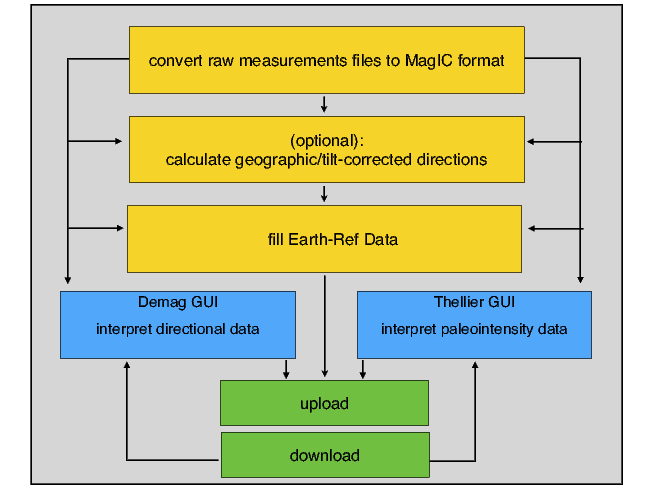
Note that the location of this program varies on different computers, so you may have to hunt around a little to find yours. Also, the actual ”prompt” will vary for different machines. The MacOS (C-shell) and Windows command line windows look like these:

The Unix (and Mac OS) Bash shell has a $ sign as a prompt. I will use the % prompt in the examples here, but any of these command line prompts will work.
When you open one of these terminal windows, you are in your “home” directory. Fundamental to all operating systems is the concept of directories and files. On windows-based operating systems (MacOS or Windows), directories are depicted as “folders” and moving about is accomplished by clicking on the different icons. In the world of terminal windows, the directories have names and are arranged in a hierarchical sequence with the top directory being the “root” directory, known as “/” (or C:’backslash’ in Windows) and the file system looks something like this:

Within the root directory, there are subdirectories (e.g. Applications and Users in bold face). In any directory, there can also be “files” (e.g. dir_cart_example.dat in italics). To refer to directories, the operating system relies on what is called a “pathname”. Every object has an “absolute” pathname which is valid from anywhere on the computer. The absolute pathname in *NIX always begins from the root directory / and in DOS (the operating system working in the Windows command line window), it is C:’backslash’.
The absolute pathname to the home directory lisa in the figure is /Users/lisa. Similarly, the absolute pathname to the directory containing PmagPy scripts would be /Users/ltauxe/PmagPy. There is also a “relative” pathname, which is in reference to the current directory (the one you are ‘sitting’ in). If user “lisa” is sitting in her home directory, the relative pathname for the file dir_cart_example.dat in the directory Datafiles_2.0 would be Datafiles_2.0/dir_cart/dir_cart_example.dat. When using relative pathnames, it is useful to remember that ./ refers to the current directory and ../ refers to the directory “above”. Also, lisa’s home directory would be ~lisa, or if you are logged in as lisa yourself, then it is just ~.
Now that you have found your command line and are comfortable in your home directory, you can view the contents of your directory with the Unix command ls or the DOS command dir. You can make a new directory with the command
This works in both Unix and DOS environments) and you can move into your new directory with the command
To move back up into the home directory, just type cd .. remembering that .. refers to the directory above. Also, cd by itself will transport you home from where ever you are (there’s no place like home....). You can also change to any arbitrary directory by specifying the full path of the destination directory.
Unix and DOS have the ability to refer to a number of files and/or directories using “wildcards”. The wildcard for a single character is “?” and for any number of characters is “*”. For example, to refer to all the files with “.py” in their name in the PmagPy directory in my home directory, I would type:
Programs that operate at the command line level print output to the screen and read input from the keyboard. This is known as “standard input and output” or “standard I/O”. One of the nicest things about working at the command line level is the ability to redirect input and output. For example, instead of typing input to a program with the keyboard, it can be read from a file using the symbol <. Output can either be printed to the screen (standard output), redirected into a file using the symbol >, appended to the end of a file with >> or used as input to another program with the pipe operator (|).
Text editing is a blessing and a curse. You either love it or hate it and in the beginning, and if you are used to programs like Word, you will certainly hate it. (And if you are used to a decent text editor, you will hate Word!). There are many ways of editing text and the subject is beyond the scope of this documentation. But you can’t use Word because the output is in a weird format that no scripting languages read easily. So you have to use an editor that will produce a plain (ascii) file, like Notepad or TextWrangler. The latter is freeware available for Macs and the former comes standard in the Windows operating system.
Python can be painful to install (but so can all other programming environments). There are a few recipes that work for Mac OS (at least for 10.4 and later) and for Windows. These recipes and ingredients are available through the website:
Once Python is installed, find your command line with its prompt. After the command prompt, type: python to start the interactive python shell. To get back out again, hold down the control key while typing the letter “d”. On Windows machines, you may have to substitute a letter “c” to achieve the same effect. This action will be referred to with ‘ctrl-D’ here.
Everyone should now have the >>> Python prompt. Here is a transcript of a python interpreter session which should make a simple graph:
which produces the fascinating graph:

To kill the interpreter, close the plot window (red button) and type ctrl-D.
If you don’t get something about Enthought Python, you are probably using the standard Mac Os version, which has none of the whistles and bells we want (plotting, numerical packages, etc.), and you’ll need to set your path properly. Look for hints at: http://earthref.org/PmagPy. For more on how to program in Python, see Chapter 6.
The MagIC database is designed to have two web portals, one for paleomagnetic data (PMAG) and one for rock magnetic data (RMAG). If you click on the PMAG PORTAL link, you will see a link labeled “Open the data tab to Start searching” which, if you click on it, takes you to the main MagIC search engine. You can look for data from a particular reference by typing in the author’s name in the “Reference Text Search” box, or search by any column with a little magnifying glass icon. Once the data you want have been identified, you can download the whole data set for example by clicking on the icon for the textfile:

After downloading, the data can be unpacked and examined using various tools in the PmagPy programs described later.
Paleomagnetic and rock magnetic data are collected and analyzed in a wide variety of ways with different objectives. Data sets can be extremely large or can be the barest boned data summaries published in legacy data tables. The goal of MagIC has been to have the flexibility to allow a whole range of data including legacy data from publications or other databases to new studies which include all the measurements, field photos, methodology, and so on. The general procedure for the future will be to archive the data at the same time that they are published. So, to smooth the path, it is advisable to put your data into the MagIC format as early in the process as possible. All data that enters the database must pass through an Excel spreadsheet, called the MagIC Console. The Console program allows you to open a “smartbook” comprised of some 30 tables each with dozens of column headings (meta-data). Data are assembled in a MagIC template file, checked for consistency and completeness, then exported to text and excel files. These can then be uploaded into the MagIC database. Data can either be entered directly into the Console, or can be prepared into a strictly formatted ascii file behind the scenes which can be imported into the Console late in the process. Here, we illustrate the use of a number of programs (the PmagPy package in Python) to facilitate the ‘behind the scenes’ process.
The MagIC database is organized around a series of data tables. The complete data model can be found here: http://earthref.org/MAGIC/metadata.htm.
Each MagIC table has a one line header of the form:
tab table_name
“tab” (or “tab delimited”) means that the table is tab delimited. In theory other delimiters are possible, but PmagPy only uses tab delimited formats. The table_name is one of the table names. The tables are of four general types: EarthRef tables (er_) shared in common with other EarthRef databases, MagIC tables (magic_) common to both rock magnetic and paleomagnetic studies, Paleomagnetic tables (pmag_), data reduction useful in paleomagnetic studies, Rock magnetic tables (rmag_), data reduction useful for rock magnetic studies. Most studies use only some of these tables. Here are some useful tables for a typical paleomagnetic study (starred are required in all cases):
| table | Brief description |
| er_locations* | geographic information about the location(s) of the study |
| er_sites | locations, lithologic information, etc. for the sampling sites |
| er_samples | orientation, sampling methods, etc. for samples |
| er_specimens | specimen weights, volumes |
| er_ages | age information. |
| er_images | images associated with the study (field shots, sample |
| photos, photomicrographs, SEM images, etc. | |
| er_citations* | citation information |
| er_mailinglist | contact information for people involved in the study |
| magic_measurements | measurement data used in the study |
| magic_methods* | methods used in the study |
| magic_instruments | instruments used in the study |
| pmag_specimens | interpretations of best-fit lines, planes, paleointensity, etc. |
| pmag_samples | sample averages of specimen data |
| pmag_sites | site averages of sample data |
| pmag_results | averages, VGP/V[A]DM calculations, stability tests, etc. |
| pmag_criteria | criteria used in study for data selection |
| rmag_susceptibility | experiment for susceptibility parameters |
| rmag_anisotropy | summary of anisotropy parameters |
| rmag_hysteresis | summary of hysteresis parameters |
| rmag_remanence | summary of remanence parameters |
| rmag_results | summary results and highly derived data |
| products (critical temperatures, etc.) | |
| rmag_criteria | criteria used in study for data selection |
The second line of every file contains the column headers (meta-data) describing the included data. For example, an er_sites table might look like this:
| tab er_sites | |||||
| er_site_name | er_location_name | site_lithology | site_type | site_lat | site_lon |
| AZ01 | Azores | basalt | lava flow | 37.80 | -25.80 |
| ... | |||||
Although data can be entered directly into the MagIC Console, it is easier to generate the necessary tables as a by-product of ordinary data processing without having to know details of the meta-data and method codes. The following section describes how to use the PmagPy software for data analysis and generate the MagIC data tables automatically for the most common paleomagnetic studies involving directions and/or paleointensities.
The MagIC database tags records with “method codes” which are short codes that describe various methods associated with a particular data record. The complete list is available here: http://earthref.org/MAGIC/methods.htm. Most of the time, you do not need to know what these are (there are over a hundred!), but it is helpful to know something about them. These are divided into several general categories like ‘geochronology methods’ and ‘field sampling methods’. Method codes start with a few letters which designate the category (e.g., GM or FS for geochronogy and field sampling respectively). Then there is a second part and possibly also a third part to describe methods with lesser or greater detail. The current (version 2.4) method codes that describe various lab treatment methods to give you a flavor for how they work are listed in this table:
| LT-AF-D | Lab Treatment | Alternating field: Double demagnetization |
| with AF along X,Y,Z measurement | ||
| followed by AF along -X,-Y,-Z measurement | ||
| LT-AF-G | Lab Treatment | Alternating field: Triple demagnetization |
| with AF along Y,Z,X measurement | ||
| followed by AF along Y and AF along Z measurement | ||
| LT-AF-I | Lab Treatment | Alternating field: In laboratory field |
| LT-AF-Z | Lab Treatment | Alternating field: In zero field |
| LT-CHEM | Lab Treatment | Cleaning of porous rocks by chemical leaching with HCl |
| LT-FC | Lab Treatment | Specimen cooled with laboratory field on |
| LT-HT-I | Lab Treatment | High temperature treatment: In laboratory field |
| LT-HT-Z | Lab Treatment | High temperature treatment: In zero field |
| LT-IRM | Lab Treatment | IRM imparted to specimen prior to measurement |
| LT-LT-I | Lab Treatment | Low temperature treatment: In laboratory field |
| LT-LT-Z | Lab Treatment | Low temperature treatment: In zero field |
| LT-M-I | Lab Treatment | Using microwave radiation: In laboratory field |
| LT-M-Z | Lab Treatment | Using microwave radiation: In zero field |
| LT-NO | Lab Treatment | No treatments applied before measurement |
| LT-NRM-APAR | Lab Treatment | Specimen heating and cooling: Laboratory |
| field anti-parallel to the NRM vector | ||
| LT-NRM-PAR | Lab Treatment | Specimen heating and cooling: Laboratory |
| field parallel to the NRM vector | ||
| LT-NRM-PERP | Lab Treatment | Specimen heating and cooling: |
| Laboratory field perpendicular to the NRM vector | ||
| LT-PTRM-I | Lab Treatment | pTRM tail check: After zero field step, |
| perform an in field cooling | ||
| LT-PTRM-MD | Lab Treatment | pTRM tail check: After in laboratory field step, |
| perform a zero field cooling at same temperature | ||
| LT-PTRM-Z | Lab Treatment | pTRM tail check: After in laboratory field step, |
| perform a zero field cooling at a lower temperature | ||
| LT-T-I | Lab Treatment | Specimen cooling: In laboratory field |
| LT-T-Z | Lab Treatment | Specimen cooling: In zero field |
| LT-VD | Lab Treatment | Viscous demagnetization by applying MU-metal screening |
| LP-X | Lab Treatment | Susceptibility |
| LT-ZF-C | Lab Treatment | Zero field cooled, low temperature IRM imparted |
| LT-ZF-CI | Lab Treatment | Zero field cooled, induced M measured on warming |
When you invoke MagIC.py, the first step is to choose a ‘Project Directory’. For each study, create a directory with a name that relates to that study. Here I will call it ThisProject. This is where you will collect and process all the rock and paleomagnetic data for a given study, usually a publication. The project directory name should have NO SPACES and be placed on the hard drive in a place that has NO spaces in the path. Under certain Windows versions, this means you should not use your home directory, but create a directory called for example: D:\MyPmagProjects and put ThisProject there.
Inside the ThisProject directory, create two additional directories: MyFiles and MagIC. All the files that you want to import into the MagIC format should be placed in MyFiles and you should just leave MagIC alone unless you really know what you are doing. The Project Directory that MagIC.py seeks is that MagIC directory.
Your Directory tree might look like this now:

There is an astounding number of different ways that paleomagnetists document data in the field and in the lab. This variety is met with a large number of method codes that describe sampling and orientation procedures (see http://earthref.org/MAGIC/methods.htm for a complete description). The MagIC database expects sample orientations to be the azimuth and plunge of the fiducial arrow used for measurement (see [Essentials, Chapter 9] ) and the orientation of the bedding to be dip direction and downward dip so no matter what your own preference is, it must be translated into the standard MagIC convention for use with the PmagPy programs and with the MagIC.py GUI.
To make the conversion from notebook information to the MagIC format, you can create a tab delimited file (orient.txt format). This file should have all the information for a single location sensu MagIC. [A location is a stratigraphic section, a sampling region, an drill core, and so on.] MagIC doesn’t really care what your location name is, but use the same location name every time you are asked for it, because it really ties your dataset together. The first line of the orient.txt file should be a header with the word ‘tab’ in the first column and the desired location name in the second column:

The next row has the names of the columns. The required columns are: sample_name, mag_azimuth, field_dip, date, lat, long, sample_lithology, sample_type, sample_class) but there are a number of other possible columns (e.g., Optional Fields in orient.txt formatted files are: [date, shadow_angle, hhmm], date, stratigraphic_height, [bedding_dip_direction, bedding_dip], [image_name, image_look, image_photographer], participants, method_codes, site_name, and site_description, GPS_Az]). Column names in brackets must be supplied together and the data for stratigraphic_height are in meters. Also note that if these are unoriented samples, just set mag_azimuth and field_dip to 0.
If there is a simple and consistent relationship between the site name and the sample name (e.g., sample ns034a belongs to site ns034), you do not need to specify a site name here as it will be parsed by orientation_magic.py when it gets imported to the MagIC format. However, many investigators have no such consistent naming scheme. Moreover, in some cases, groups of samples or initial site designations need to be re-grouped for averaging. For example, if it becomes clear that a sequence of lava flows were erupted over a short period of time and should be averaged together, you would need a new site name for all the samples. Note that there are different understandings of the term site in the paleomagnetic community. We adhere to the MagIC definition of “site”, which is:
site: a group of samples that are homogeneous with respect to the property being measured.
When a site has no simple relationship to the sample names, a column named site_name in the orient.txt file can be used with the site name filled in for every sample.
It is handy to document the lithology, type and material classification information required by MagIC. These are all controlled vocabularies listed at http://earthref.org/MAGIC/shortlists.htm. For archaeological materials, set the lithology to “Not Specified”.
Put in stratigraphic height, sun compass, differential GPS orientation information under the appropriate column headings. You can also flag a particular sample orientation as suspect, by having a column ’sample_flag’ and setting it to either ’g’ for good or ’b’ for bad. Other options include documenting digital field photograph names and who was involved with the sampling.
For Sun Compass measurements, supply the shadow_angle, date and time. The date must be in mm/dd/yy format. If you enter the time in local time, be sure you know the offset to Universal Time as you will have to supply that when you import the file. Also, only put data from one time zone in a single file. The shadow angle should follow the convention shown in this figure (from Tauxe et al., 2010):

Supported sample orientation schemes:
There are options for different orientation conventions (drill direction with the Pomeroy orientation device [drill azimuth and hade] is the default), different naming conventions and a choice of whether to automatically calculate the IGRF value for magnetic declination correction, supply your own or ignore the correction. The program generates er_samples.txt and er_sites.txt files. Be warned that existing files with these names will be overwritten.
All images, for example outcrop photos are supplied as a separate zip file. image_name is the name of the picture you will import, image_look is the ”look direction” and image_photographer is the person who took the picture. This information will be put in a file named er_images.txt and will ultimately be read into the er_image table in the console where additional information must be entered (keywords, etc.).
Often, paleomagnetists note when a sample orientation is suspect in the field. To indicate that a particular sample may have an uncertainty in its orientation that is greater than about 5∘, enter SO-GT5 in the method_codes column and any other special codes pertaining to a particular sample from the method codes table. Other general method codes can be entered later. Note that unlike date and sample_class, the method codes entered in orient.txt pertain only to the sample on the same line.
Samples are oriented in the field with a ”field arrow” and measured in the laboratory with a ”lab arrow”. The lab arrow is the positive X direction of the right handed coordinate system of the specimen measurements. The lab and field arrows may not be the same. In the MagIC database, we require the orientation (azimuth and plunge) of the X direction of the measurements (lab arrow). Here are some popular conventions that convert the field arrow azimuth (mag_azimuth in the orient.txt file) and dip (field_dip in orient.txt) to the azimuth and plunge of the laboratory arrow (sample_azimuth and sample_dip in er_samples.txt). The two angles, mag_azimuth and field_dip are explained below.
[1] Standard Pomeroy convention of azimuth and hade (degrees from vertical down) of the drill direction (field arrow). sample_azimuth = mag_azimuth; sample_dip =-field_dip.
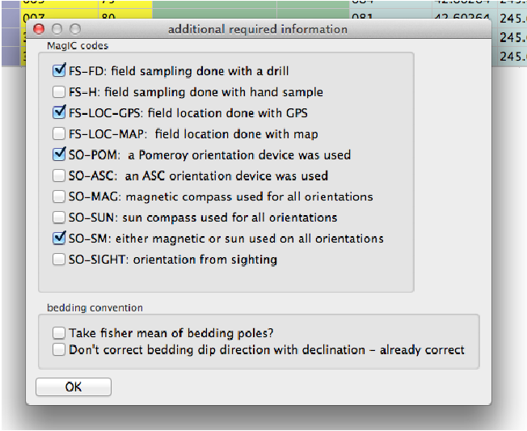
2] Field arrow is the strike of the plane orthogonal to the drill direction, Field dip is the hade of the drill direction. Lab arrow azimuth = mag_azimuth-90∘; Lab arrow dip = -field_dip

[3] Lab arrow is the same as the drill direction; hade was measured in the field. Lab arrow azimuth = mag_azimuth; Lab arrow dip = 90∘-field_dip.

[4] Lab arrow orientation same as mag_azimuth and field_dip.

[5] Lab arrow azimuth is mag_azimuth and lab arrow dip is the field_dip-90∘

[6] Lab arrow azimuth is mag_azimuth-90∘, Lab arrow dip is 90∘-field_dip, i.e., the field arrow was strike and dip of orthogonal face:

Structural correction conventions:
Because of the ambiguity of strike and dip, the MagIC database uses the dip direction and dip where dip is positive from 0 → 180. Dips>90 are overturned beds.
Supported sample naming schemes:
This is a very simple file format with the sample name Azimuth Plunge Strike Dip where the Azimuth and Plunge are of the drill direction (Specimen’s Z direction) or orientation convention #3 above to convert to the MagIC standard. To convert strike to bedding dip direction, we would just add 90∘. Here is an example AzDip file:

There are two types of files that help in plotting of IODP paleomagnetic data sets: the core summaries with depth to core top information and the sample information that contains lists of samples taken. Visiting the IODP science query website at http://web.iodp.tamu.edu/WTR/html/sci-data.html allows you to select ’SRM - Remanence of magnetization’ under the Analysis scroll down menu. By picking the expedition, site, hole, etc. you can download a .csv format (comma separated values) for the expedition data. (Be aware that this is the rawest form of the data, including disturbed intervals, bad measurements, core ends, etc. and may not be exactly what ended up getting published!). First click on the “Show Report” button, then, “Expand Table”, then “Get File”:

This can take a very long time, so get yourself a cup of tea.
You can also (while you’re at it) click on the ’Summaries’ tab and download the coring summaries:
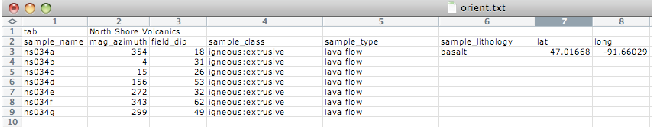
Place both of the downloaded files in your MyFiles directory.
The MagIC database is designed to accept data from a wide variety of paleomagnetic and rock magnetic experiments. Because of this the magic_measurements table is very complicated. Each measurement only makes sense in the context of what happened to the specimen before measurement and under what conditions the measurement was made (temperature, frequency, applied field, specimen orientation, etc). Also, there are many different kinds of instruments in common use, including rock magnetometers, susceptibility meters, Curie balances, vibrating sample and alternating gradient force magnetometers, and so on. We have made an effort to write translation programs for the most popular instrument and file formats and continue to add new supported formats as the opportunity arises. Here we describe the various supported data types and tell you how to prepare your files for importing. In general, all files for importing should be placed in the MyFiles directory or in subdirectories therein as needed. If you don’t see your data type in this list, please send an example file and a request to: ltauxe@ucsd.edu and we’ll get it in there for you.
The supported file formats are:
Rock Magnetometer Files:
Anisotropy of Magnetic Susceptibility files:
MagIC.py will import hysteresis data from room temperature Micromag alternating gradient magnetometers (AGM) in several different ways. You can import either hysteresis loops or backfield curves, or you can import whole directories of the same. In the latter case, the file endings must be either .agm (.AGM) or .irm (.IRM) and the first part of the file must be the specimen name. See the documentation for AGM_magic.py for examples.
If you already have a PmagPy “redo” file, you can import it into the MagIC folder with this option.
Many investigators are used to their own data analysis routines (e.g., LSQ and PMM). These are not supported at this time. If you have example files and want to see them supported within MagIC.py, please send them to me at: ltauxe@ucsd.edu.
Now you’ve collected together all the files you need, we can start importing them into MagIC directory with MagIC.py.
There are a number of other datafiles necessary for uploading into the MagIC database, such as the er_locations.txt, er_ages.txt, er_citations.txt, etc. files. These tab delimited text files can be created with Excel (or other program) and imported into your MagIC folder with this option.
The MagIC.py graphical user interface is a Python program that facilitates importing of measurement data and sample information (location, orientation, etc.) into the MagIC format and interpretation thereof. It will help prepare all the files into a text format that can be imported directly into a MagIC smartbook. MagIC.py copies files to be uploaded into a special project MagIC directory, translates them into the MagIC format and keeps track of things in various log files. Note that when it does this, it will translate them into a Unix file format (from MacOS and Windows file formats) so you don’t have to. Once the MagIC project directory has been created, you should just leave it alone. Assuming you have placed all the needed files (orient.txt formatted files for each location and the measurement data files) in the MyFiles directory, open up a terminal window and type MagIC.py on the command line. Select the MagIC directory in your Project Directory when prompted.
Different operating systems will have a different look, but all versions will put up a Welcome window when you have fired up the program MagIC.py. When you pull down the ”File” menu, you will see these options either on the top of your Desktop (Mac OS) or on the top of the window itself (Windows version):

When you pull down the “Import” menu, you will see these options:

Under the ‘Orientation/location/stratigraphic files’ menu, you will find:
The GUI will then generate a call with the appropriate switches and your orientation data will be imported. NOTE: If you have already combined your measurements files into the master magic_measurements.txt file AND you have changed site designations using the site_name option in the orient.txt file, you should select “Update measurements” to change the site names in that file (these get propagated all the way down the line, so it is important to do this step correctly.
Under ‘Magnetometer files’, you will find a variety of file formats described in the section on magnetometer files. Each of these has an idiosyncratic interface. Some allow importing of entire directories at once, while others import data file by file. Be sure to combine your measurements after you finish importing all your measurements, before proceeding to data analysis.

You should also check one of the lab protocols you used.
Under the Anisotropy import menu you will find:
There are two different modes for importing hysteresis/backfield data: by file or by directory. For the former:
For importing whole directories: Your file names must follow the convention described in the section on hysteresis file formats. Follow the same steps as before, but you will not be asked for a specimen name or whether the data are from backfield experiments as these are supplied by the file names.
To combine all the data together, select Combining measurement files.
Each time you import a measurement file, you create a MagIC version of the imported data file with the same name, but a .magic appended to the end. These filenames are stored in the file measurements.log. After you have completed importing all your measurement files, you must combine them together into a single magic_measurements.txt file in order to use the other functions in MagIC.py. Just select this option and everything will be done for you.
This option makes a call to convert_samples.txt to convert the er_samples.txt file created by some import procedures into an orient.txt file which can be filled in as desired. It can be re-imported by importing orientation information. After re-importing the orient.txt file, you should update your measurements.
Update your magic_measurements.txt file with new site/location information by calling the program update_measurements.py. This should be done after importing a new orient.txt file.
Many people prefer to use the software package that they are familiar with (e.g., PaleoMac software of Cogn, 2003), Craig Jones’ PaleoMag software, or even previously processed Pmag (Tauxe, 1998) or PmagPy (Tauxe et al., 2010) softare and have generated files containing favorite interpretations of the paleomagnetic data. MagIC.py can import these interpretation files, allowing the user to skip re-analysis and proceed directly to preparation of files for uploading, or re-interpretation of data files using PmagPy starting with the prior interpretations as a basis. In any case, the following interpretation files are supported (or could be):
If you have already some MagIC tables ready, you can import them into your MagIC folder with this option. For example, you might have a previous set of specimen interpretations in a pmag_specimen.txt file, or age information (in an er_ages.txt file. All age information specific to a give sample or site can be documented in an er_ages.txt file (see http://earthref.org/MAGIC/metadata.htm). These will be assembled with the respective site/samples in the results table when you assemble your results. Other examples might be a location table (er_locations.txt) or a citation table (er_citations.txt).
This option will copy your MagIC formatted file into the MagIC Project Directory. Be sure to use the standard file names or the MagIC GUI will ignore them.
After you have imported your various datafiles, you can process them using the tools in the Analysis and Plots menu. All of these options generate and execute command line calls for various PmagPy programs. The MagIC.py GUI uses default options because it “knows” the names of the files it has created, saving you from having to figure that out. Many of these options require you to type things in on the command line, such as ’a’ to s[a]ve plots, ’q’ to quit, or simply return to increment the specimen name. Follow the instructions for the specific program that are printed in the terminal window (see also the documentation in the section on PmagPy programs). Once the program has exited, control will be returned to the MagIC.py GUI.
Once all your data have been imported and interpreted using one of the interpretation tools outlined in the section on Analysis and Plots, you can assemble the results into the various tables expected by MagIC, e.g., the pmag_specimens, pmag_samples, pmag_sites and pmag_results tables (also various rock magnetic tables, if available).
Takes you to the PmagPy Documentation website:
http://earthref.org/PmagPy/Docs/PmagPy.
When you type something on your command line, your operating system looks for programs of the same name in special places. These are special “paths” so the directory with your Python scripts has to “be in your path”. To inform the operating system of the new directory, you need to “set your path”. Follow the instructions on the website: http://earthref.org/PmagPy/set_path.html for your particular system.
PmagPy scripts work by calling them on a command line. The python scripts must be placed in a directory that is in your “path”. To see if this has been properly done, type dir_cart.py -h on the command line and you should get a help message. If you get a “command not found” message, you need to fix your path; check the “installing python” page on the software website. Another possible cause for failure is that somehow, the python scripts are no longer executable. To fix this, change directories into the directory with the scripts, and type the command: chmod a+x *.py
For people who hate command line programs and prefer graphical user interfaces with menus, etc., some of the key programs for interpreting paleomagnetic and rock magnetic data are packaged together in a program called MagIC.py. This can be invoked by typing MagIC.py on the command line. The MagIC.py program generates the desired commands for you, so you do not have to learn UNIX or how to use the command line (except to call the MagIC.py program itself). Nonetheless, some understanding of what is actually happening is helpful, because the MagIC.py program is more limited than full range of PmagPy programs. So, here is a brief introduction to how the PmagPy programs work.
All PmagPy programs print a help message out if you type: program_name.py -h on the command line. Many have an “interactive” option triggered by typing program_name.py -i. Many also allow reading from standard input and output. The help message will explain how each particular program functions. There are some common features for the command line options:
The PmagPy scripts call on two special modules, the pmag and the pmagplotlib modules. These contain most of the calculations and plotting functions.
The source code and the help messages for all programs in the PmagPy package are also available online at: http://earthref.org/PmagPy/pmagpydocs
A link to these source code/help menu files is provided for each program listed below with the format [program_name_docs].
In all examples, the ’%’ prompt stands for whatever command line prompt you have. Download the package containing example data files from:
http://earthref.org/PmagPy/Datafiles_2.0.zip
and unzip the file. Data files for the following examples can be found in the directory with the name of the program (except for measurement input files which are all in the Measurement_Import folder.
[Essentials Chapter 13] [MagIC] [aarm_magic docs]
Anisotropy of anhysteretic or other remanence can be converted to a tensor and used to correct natural remanence data for the effects of anisotropy remanence acquisition. For example, directions may be deflected from the geomagnetic field direction or intensities may be biased by strong anisotropies in the magnetic fabric of the specimen. By imparting an anhysteretic or thermal remanence in many specific orientations, the anisotropy of remanence acquisition can be characterized and used for correction. We do this for anisotropy of anhysteretic remanence (AARM) by imparting an ARM in 9, 12 or 15 positions. Each ARM must be preceded by an AF demagnetization step. The 15 positions are shown in the k15_magic.py example.
For the 9 position scheme, aarm_magic.py assumes that the AARMs are imparted in positions 1,2,3, 6,7,8, 11,12,13. Someone (a.k.a. Josh Feinberg) has kindly made the measurements and saved them an SIO formatted measurement file named arm_magic_example.dat in the datafile directory called aarm_magic. Note the special format of these files - the treatment column (column #2) has the position number (1,2,3,6, etc.) followed by either a “00” for the obligatory zero field baseline step or a “10” for the in-field step. These could also be ‘0‘ and ‘1’.
We need to first import these into the magic_measurements format and then calculate the anisotropy tensors. These can then be plotted or used to correct paleointensity or directional data for anisotropy of remanence.
So, first use the program sio_magic.py to import the AARM data into the MagIC format. The DC field was 50 μT, the peak AC field was 180 mT, the location was ‘Bushveld’ and the lab protocol was AF and Anisotropy. The naming convention used Option # 3 (see help menu).
Then use the program aarm_magic.py to calculate the best-fit tensor and write out the MagIC tables: rmag_anisotropy and rmag_results. These files can be used to correct remanence data in a pmag_specimens format table (e.g, intensity data) for the effects of remanent anisotropy (e.g., using the program thellier_magic_redo.py.
Here is a transcript of a session that works. Note that the sio_magic.py command is all on one line (which is what the terminal backslash means).
[Essentials Appendix A.3.4] [angle docs]
Use the program angle.py to calculate the angle (α) between two directions D = 350.2,I = 26.8;D = 98.6,I = 67.3.
[NB: PC users will get a more angry sounding exit message]
You can also use this program by reading in a filename using the ’-f’ option or from standard input (with <). Try this out with the test file in the angle directory (angle.dat). First examine the contents of the input file using “cat” (or “ type” on a DOS prompt). Then use angle.py to calculate the angles. You can also save your output in a file angle.out with the ’-F’ option:
[Essentials Chapter 13]; [MagIC] [ani_depthplot docs]
Anisotropy data can be plotted versus depth. The program ani_depthplot.py uses MagIC formatted data tables of the rmag_anisotropy.txt and er_samples.txt types. rmag_anisotropy.txt stores the tensor elements and measurement meta-data while er_samples.txt stores the depths, location and other information. Bulk susceptibility measurements can also be plotted if they are available in a magic_measurements.txt formatted file.
In this example, we will use the data from Tauxe et al. (2012) measured on samples obtained during Expedition 318 of the International Ocean Drilling Program. To get the entire dataset, go to the MagIC data base at: http://earthref.org/MAGIC/ and find the data using the search interface. As a short-cut, you can use the “permalink”:
http://earthref.org/MAGIC/m000629dt20120607193954.
Download the text file by clicking on the icon under the red arrow in:

Unpack the data using the program download_magic.py. This will unpack the data into the different holes. Change directories into Location_2 (which contains the data for Hole U1359A). Or, you can use the data in the ani_depthplot directory of the example data files.
will create the plot:

[Essentials Chapter 13]; [MagIC] [aniso_magic docs]
Samples were collected from the eastern margin a dike oriented with a bedding pole declination of 110∘ and dip of 2∘. The data have been imported into a rmag_anisotropy formatted file named dike_anisotropy.txt.
Make a plot of the data using aniso_magic.py. Use the site parametric bootstrap option and plot out the bootstrapped eigenvectors. Draw on the trace of the dike.
These things are done in this session:
which produced these plots:

The specimen eigenvectors are plotted in the left-hand diagram with the usual convention that squares are the V 1 directions, triangles are the V 2 directions and circles are the V 3 directions. All directions are plotted on the lower hemisphere. The bootstrapped eigenvectors are shownin the middle diagram. Cumulative distributions of the bootstrapped eigenvalues are shown to the right with the 95% confidence bounds plotted as vertical lines. It appears that the magma was moving in the northern and slightly up direction along the dike.
There are more options to aniso_magic.py that come in handy. In particular, one often wishes to test if a particular fabric is isotropic (the three eigenvalues cannot be distinguished), or if a particular eigenvector is parallel to some direction. For example, undisturbed sedimentary fabrics are oblate (the maximum and intermediate directions cannot be distinguished from one another, but are distinct from the minimum) and the eigenvector associated with the minimum eigenvalue is vertical. These criteria can be tested using the distributions of bootstrapped eigenvalues and eigenvectors.
The following session illustrates how this is done, using the data in the test file sed_anisotropy.txt in the aniso_magic directory.
which makes these plots:

The top three plots are as in the dike example before, showing a clear triaxial fabric (all three eigenvalues and associated eigenvectors are distinct from one another. In the lower three plots we have the distributions of the three components of the chosen axis, V 3, their 95% confidence bounds (dash lines) and the components of the designated direction (solid line). This direction is also shown in the equal area projection above as a red pentagon. The minimum eigenvector is not vertical in this case.
[Essentials Chapter 16] [apwp docs]
The program apwp.py calculates paleolatitude, declination, inclination from a pole latitude and longitude based on the paper Besse and Courtillot (2002; see Essentials Chapter 16 for complete discussion). Use it to calculate the expected direction for 100 million year old rocks at a locality in La Jolla Cove (Latitude: 33N, Longitude 117W). Assume that we are on the North American Plate! (Note that there IS no option for the Pacific plate in the program apwp.py, and that La Jolla was on the North American plate until a few million years ago (6?).
Note that as with many PmagPy programs, the input information can be read from a file and the output can be put in a file. For example, we put the same information into a file, apwp_example.dat and use this syntax:
[Essentials Chapter 13] [MagIC] [atrm_magic docs]
Anisotropy of thermal remanence (ATRM) is similar to anisotropy of anhysteretic remanence (AARM) and the procedure for obtaining the tensor is also similar. Therefore, the program atrm_magic.py is quite similar to aarm_magic.py. However, the SIO lab procedures for the two experiments are somewhat different. In the ATRM experiment, there is a single, zero field step at the chosen temperature which is used as a baseline. We use only six positions (as opposed to nine for AARM) because of the additional risk of alteration at each temperature step. The positions are also different:

The file atrm_magic_example.dat in the atrm_magic directory is an SIO formatred data file containing ATRM measurement data done in a temperature of 520∘C. Note the special format of these files - the treatment column (column #2) has the temperature in centigrade followed by either a “00” for the obligatory zero field baseline step or a “10” for the first postion, and so on. These could also be ‘0‘ and ‘1’, etc..
Use the program sio_magic.py to import the ATRM data into the MagIC format. The DC field was 40 μT. The naming convention used option # 1 (see help menu). Then use the program atrm_magic.py to calculate the best-fit tensor and write out the MagIC tables: rmag_anisotropy and rmag_results formatted files. These files can be used to correct remanence data in a pmag_specimens format table (e.g, intensity data) for the effects of remanent anisotropy (e.g., using the program thellier_magic_redo.py.
Here is an example transcript:
[Essentials Chapter 9] and [MagIC][azdip_magic docs]
Many paleomagnetists save orientation information in files in this format: Sample Azimuth Plunge Strike Dip (AZDIP format), where the Azimuth and Plunge are the declination and inclination of the drill direction and the strike and dip are the attitude of the sampled unit (with dip to the right of strike). The MagIC database convention is to use the direction of the X coordinate of the specimen measurement system. To convert an AzDip formatted file (example.az) for samples taken from a location name “Northern Iceland” into the MagIC format and save the information in the MagIC er_samples.txt file format, use the program azdip_magic.py:
Note that there are many options for relating sample names to site names and we used the first convention that has a single character at the end of the site name to designate each sample (e.g., is132d is sample ’d’ from site is132). We have also specified certain field sampling and orientation method codes (-mcd), here field sampling-field drilled (FS-FD) and sample orientation-Pomeroy (SO-POM). The location was “Northern Iceland”. See the help menu for more options.
Another way to do this is to use the orientation_magic.py program which allows much more information to be imported.
[Essentials Chapter 2] [b_vdm docs]
Use the program b_vdm to convert an estimated paleofield value of 33 μT obtained from a lava flow at 22∘ N latitude to the equivalent Virtual Dipole Moment (VDM) in Am2. Put the input information into a file called vdm_input.dat and read from it using standard input :
[MagIC] and high resolution instructions [basemap_magic docs]
Python has a complete map plotting package and PmagPy has a utility for making simple base maps for projects. Site location data imported for example using orientation_magic.py into an er_sites formatted text file can be plotted using basemap_magic.py. There are many options, so check the help message for more details. Note that if you want to use high resolution datafiles or the etopo20 meshgrid (-etp option), you must install the high resolution continental outlines as described on the high resolution instructions website.
As an example, use the program basemap_magic.py to make a simple basemap plot with site locations in a MagIC er_sites.txt formatted file named basemap_example.txt.
which makes this plot:

Use the buttons at the bottom of the plot to resize or save the plot in the desired format.
[Essentials Chapter 8] and [MagIC] [biplot_magic docs]
It is often useful to plot measurements from one experiement against another. For example, rock magnetic studies of sediments often plot the IRM against the ARM or magnetic susceptibility. All of these types of measurements can be imported into a single magic_measurements formatted file, using magic method codes and other clues (lab fields, etc.) to differentiate one from another. Data were obtained from a Paleogene core from 28∘S for a relative paleointensity study. IRM, ARM, magnetic susceptibility and remanence data were uploaded to the MagIC database. The magic_measurements formatted file for this study is saved in core_measurements.txt.
Use the program biplot_magic.py to make a biplot of magnetic susceptibility against ARM. Note that the program makes use of the MagIC method codes which are LT-IRM for IRM, LT-AF-I for ARM (AF demagnetization, in a field), and LP-X for magnetic susceptibility.
First, to find out which data are available, run the program like this:
These are the method codes for AF demagnetization of NRM, ARM, IRM and susceptibility measurements respectively. So to make a plot of susceptibility against ARM, we would run the program again:
which makes the plot:

[Essentials Chapter 13] [bootams docs]
The program bootams.py calculates bootstrap statistics for anisotropy tensor data in the form of:
x11 x22 x33 x12 x23 x13
It does this by selecting para-data sets and calculating the Hext average eigenparameters. It has an optional parametric bootstrap whereby the σ for the data set as a whole is used to draw new para data sets. The bootstrapped eigenparameters are assumed to be Kent distributed and the program calculates Kent error ellipses for each set of eigenvectors. It also estimates the standard deviations of the bootstrapped eigenvalues.
Use this to calculate the bootstrapped error statistics for the data in file bootams_examples.data:
Note that every time bootams gets called, the output will be slightly different because this depends on calls to random number generators. If the answers are different by a lot, then the number of bootstrap calculations is too low. The number of bootstraps can be changed with the -nb option.
[Essentials Chapter 2] [cart_dir docs]
Use the program cart_dir.py to convert these cartesian coordinates to geomagnetic elements:
| x1 | x2 | x3 |
| 0.3971 | -0.1445 | 0.9063 |
| -0.5722 | 0.0400 | -0.8192 |
To use the interactive option:
To read from a file:
[Essentials Chapter 10] [chartmaker docs]
Paleointensity experiments are quite complex and it is easy to make a mistake in the laboratory. The SIO lab uses a simple chart that helps the experimenter keep track of in-field and zero field steps and makes sure that the field gets verified before each run. You can make a chart for an infield-zerofield, zerofield-infield (IZZI) experiment using the program chartmaker.py. Make such a chart using 50∘C steps up to 500∘C followed by 10∘C steps up to 600∘C.
The chart allows you to fill in the file name in which the data were stored and the field value intended for the infield steps. The designations ‘Z’, ‘I’, ’T’, ’and ’P’ are for zero-field, in-field, pTRM tail checks and pTRM checks respectively. There are fields for the date of the runs, the fields measured in different zones in the oven prior to the start of the experiment, and the start and stop times. The numbers, e.g., 100.1 are the treatment temperatures (100) followed by the code for each experiment type. These get entered in the treatment fields in the SIO formatted magnetometer files (see sio_magic.py).
[Essentials Chapter 8] & [MagIC] [chi_magic docs]
It is sometimes useful to measure susceptibility as a function of temperature, applied field and frequency. Here we use a data set that came from the Tiva Canyon Tuff sequence (see Carter-Stiglitz, 2006). Use the program chi_magic.py to plot the data in the magic_measurements formatted file: chi_magic_example.dat.
produced this plot:
You can see the dependence on temperature, frequency and applied field. These data support the suggestion that there is a strong superparamagnetic component in these specimens.
MagIC tables have many columns only some of which are used in a particular instance. So combining files of the same type must be done carefully to ensure that the right data come under the right headings. The program combine_magic.py can be used to combine any number of MagIC files from a given type. For an example of how to use this program, see AGM_magic.py.
[Essentials Chapter 12] [common_mean docs]
Most paleomagnetists use some form of Fisher Statistics to decide if two directions are statistically distinct or not (see Essentials Chapter 11 for a discussion of those techniques. But often directional data are not fisher distributed and the parametric approach will give misleading answers. In these cases, one can use a boostrap approach, described in detail in [Essentials Chapter 12]. Here we use the program common_mean.py for a bootstrap test for common mean to check whether two declination, inclination data sets have a common mean at the 95% level of confidence. The data sets are: common_mean_ex_file1.dat and common_mean_ex_file2.dat. But first, let’s look at the data in equal area projection using the program eqarea.py.
The session:
generates two .svg formatted files that look like these:
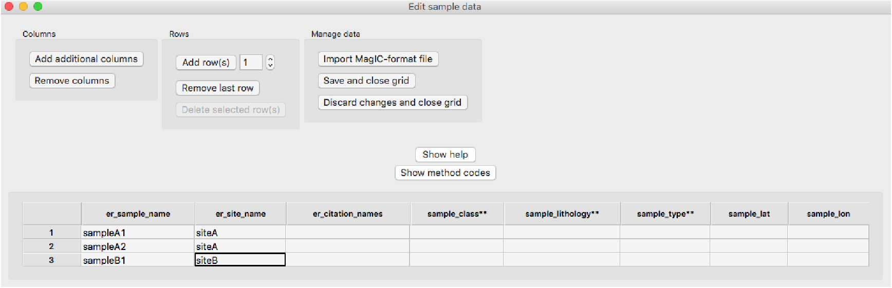
Now let’s look at the common mean problem using common_mean.py.
The three plots are:
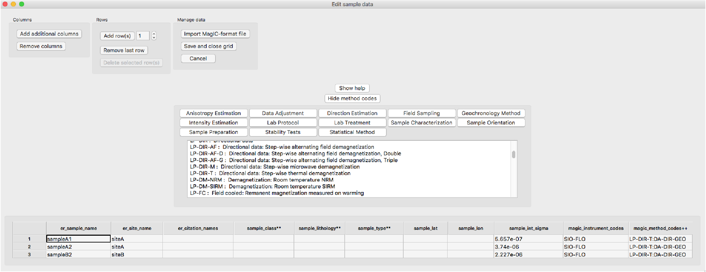
These suggest that the two data sets share a common mean.
Now compare the data in common_mean_ex_file1.dat with the expected direction at the 5∘N latitude that these data were collected (Dec=0, Inc=9.9).
To do this, follow this transcript:

Apparently the data (cumulative distribution functions) are entirely consistent with the expected direction (dashed lines are the cartesian coordinates of that).
[Essentials Chapter 16 and Essentials Appendix A.3.5.] [cont_rot docs]
Use the program cont_rot.py to make an orthographic projection with latitude = -20∘ and longitude = 0∘ at the center of the African and South American continents reconstructed to 180 Ma using the Torsvik et al. (2008) poles of finite rotation. Do this by first holding Africa fixed. Move the output plot to fixed_africa.svg. Then make the plot for Africa adjusted to the paleomagnetic reference frame. Make the continental outlines in black lines and set the resolution to ’low’.
These commands generated the following plots (first on left, second on right):
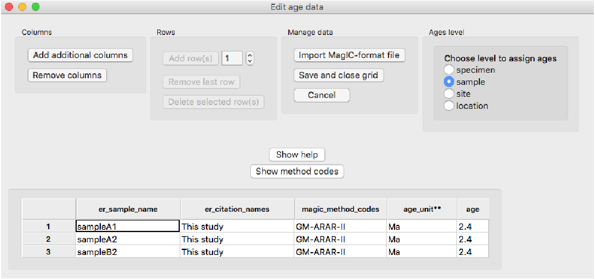
This is a handy little script that turns Windows or Mac file formatted files (not Word or other proprietary formats) into Unix file format. It does the change in place, overwriting the original file.
[MagIC] [convert_samples docs]
If one of the MagIC related programs in PmagPy created a very lean looking er_samples.txt file (for example using azdip_magic.py) and you need to add more information (say, latitude, longitude, lithology, etc.), you can convert the er_samples.txt file into an orient.txt file format, edit it in, for example Excel, and then re-import it back into the er_samples.txt file format. Try this on the er_samples formatted file in the convert_samples directory, convert_samples_example.dat.
[[Essentials Chapter 15] [core_depthplot docs]
Use the program core_depthplot.py to plot various measurement data versus sample depth. The data must be in the MagIC data formats. The program will plot whole core data, discrete sample at a bulk demagnetization step, data from vector demagnetization experiments, and so on. There are many options, so check the help menu before you begin.
We can try this out on some data from DSDP Hole 522, measured by Tauxe and Hartl (1997). These can be downloaded and unpacked (see download_magic.py for details), or you can try it out on the data files in the directory core_depthplot. You must specify a lab-protocol (LP) for plotting. In this example, we will plot the alternating field (AF) data after the 15 mT step. The magnetizations will be plotted on a log scale and, as this is a record of the Oligocene, we will plot the Oligocene time scale, using the calibration of Gradstein et al. (2004), commonly referred to as “GTS04” for the the Oligocene. We are only interested in the data between 50 and 150 meters (the -d option sets this) and we will suppress the declinations (-D).
will produce the plot:

[Essentials Chapter 6] [curie docs]
Use the program curie.py to interpret curie temperature data in the example file curie_example.dat. Use a smoothing window of 10∘.
which generates these plots:

[MagIC] [customize_criteria docs]
The MagIC database allows documentation of which criteria were used in selecting data on a specimen, sample or site level and to easily apply those criteria (and re-apply them as they change) in preparing the different tables. These choices are stored in the pmag_criteria table in each MagIC project directory (see MagIC.py documentation).
Certain PmagPy programs use the datafile pmag_criteria.txt to select data (for example thellier_magic.py and specimens_results_magic.py). To customize these criteria for your own data sets, you can use the program customize_criteria.py. This program is also called by the MagIC.py GUI under the Utilities menu. Try it out on pmag_criteria.txt. This is a “full vector” set of criteria - meaning that it has both directions and intensity flags set. Change the specimen_alpha95 cutoff to 180. from whatever it is now set to. Save the output to a new file named new_criteria.txt.
Note that the default place for the PmagPy programs to look for criteria is in pmag_criteria.txt, so you should probably rename the new one that for it to take effect as your new default.
[Essentials Chapter 5] [dayplot_magic docs]
Use the program dayplot_magic.py to make Day (Day et al., 1977) , or Squareness-Coercivity and Squareness-Coercivity of Remanence plots (e.g., Tauxe et al., 2002) from the rmag_hyseresis formatted data in dayplot_magic_example.dat.
The session:
gives the plots:

[Essentials Appendix B] [di_eq docs]
Paleomagnetic data are frequently plotted in equal area projection. PmagPy has several plotting programs which do this (e.g., eqarea.py, but occasionally it is handy to be able to convert the directions to X,Y coordinates directly, without plotting them at all. The program di_eq.py does this. Here is an example transcript of a session using the datafile di_eq_example.dat:
[Essentials Chapter 9] and Changing coordinate systems [di_geo docs]
Use the programs di_geo.py to convert D = 8.1,I = 45.2 from specimen coordinates to geographic adjusted coordinates. The orientation of laboratory arrow on the specimen was: azimuth = 347; plunge = 27. di_geo.py works in the usual three ways (interactive data entry, command line file specification or from standard input . So for a quickie answer for a single specimen, you can use the interactive mode:
which spits out our answer of Declination = 5.3 and inclination = 71.6.
For more data, it is handy to use the file entry options. There are a bunch of declination, inclination, azimuth and plunge data in the file di_geo_example.dat in the di_geo directory. First look at the data in specimen coordinates in equal area projection, using the program eqarea.py. Note that this program only pays attention to the first two columns so it will ignore the orientation information.
which should look like this:

The data are highly scattered and we hope that the geographic coordinate system looks better! To find out try:
which looks like this:

These data are clearly much better grouped.
[Essentials Chapter 11] [di_rot docs]
Generate a Fisher distributed set of data from a population with a mean direction of D = 0,I = 42 using the program fishrot.py. Calculate the mean direction of the data set using gofish.py. Now use the program di_rot.py to rotate the set of directions to the mean direction. Look at the data before and after rotation using eqarea.py.
which generates plots like these:

Note that every instance of fisher.py will draw a different sample from a Fisher distribution and your exact plot and average values will be different in detail every time you try this (and that’s part of the fun of statistical simulation.)
[Essentials Chapter 9] and Changing coordinate systems [di_tilt docs]
Use the program di_tilt.py to rotate a direction of Declination = 5.3 and Inclination = 71.6 to “stratigraphic” coordinates. The strike was 135 and the dip was 21. The convention in this program is to use the dip direction, which is to the “right” of this strike.
Here is a session with di_tilt.py using the interactive option:
Try the same on the data file saved as di_tilt_example.dat using the command line -f switch:
[Essentials Chapter 2] [di_vgp docs]
Use the program di_vgp to convert the following:
| D | I | λs (N) | ϕs (E) |
| 11 | 63 | 55 | 13 |
| 154 | -58 | 45.5 | -73 |
Here is a transcript of a typical session using the command line option for file name entry:
[Essentials Chapter 2] [dipole_pinc docs]
Calculate the expected inclination at a paleolatitude of 24∘S.
[Essentials Chapter 2] [dipole_plat docs]
Calculate the paleolatitude for an average inclination of 23∘.
[Essentials Chapter 2]] [dir_cart docs]
Use the program dir_cart.py to convert the following data from declination D, inclination I and intensity M to x1,x2,x3.
| D | I | M (μAm2) |
| 20 | 46 | 1.3 |
| 175 | -24 | 4.2 |
You can enter D,I,M data into data file, then running the program by typing what is after the prompts (%) [ the other stuff is computer responses] :
Or you could use dir_cart.py interactively as in:
[Essentials Chapter 9] and [MagIC] [dmag_magic docs]
Use dmag_magic.py to plot out the decay of all alternating field demagnetization experiments in the magic_measurements formatted file in dmag_magic_example.dat. These are from Lawrence et al. (2009). Repeat for all thermal measurements, but exclude all the data acquired during the thermal but not paleointensity experiments. Try this at the location level and then at the site level.
Here is a transcript of a session:
which produced these plots:

This program unpacks .txt files downloaded from the MagIC database into individual directories for each location into which the individual files for each table (e.g., er_locations.txt, magic_measurements.txt, pmag_results.txt and so on) get placed. As an example, go to the MagIC data base at http://earthref.org/MAGIC/search. Enter “Tauxe and 2004” into the Reference Text Search field will show you several references. Look for the one for Tauxe, L., Luskin, C., Selkin, P., Gans, P. and Calvert, A. (2004). Download the text file under the “Contribution SmartBook” column and save it to your desktop. Make a folder into which you should put the downloaded txt file called MagIC_download and move the file into it. Now use the program download_magic.py to unpack the .txt file (zmab0083201tmp03.txt).
You can change directories into each Location directory (in this case only one) and examine the data using the PmagPy programs (e.g., zeq_magic.py).
[Essentials Chapter 13] [eigs_s docs]
Print out the eigenparameters in the file eigs_s_example.dat and then convert them to tensor data in the .s format (x11,x22,x33,x12,x13,x23).
This session uses the unix utility cat to print the data. [You could use the Ms-Dos form type in a Windows command line window.] Then, it prints the tensor data to the screen.
[Essentials Appendix B] [eq_di docs]
Data are frequently published as equal area projections and not listed in data tables. These data can be digitized as x,y data (assuming the outer rim is unity) and converted to approximate directions with the program eq_di.py. To use this program, install a graph digitizer (GraphClick from http://www.arizona-software.ch/graphclick/ works on Macs).
Digitize the data from the equal area projection saved in the file eqarea.png in the eq_di directory. You should only work on one hemisphere at a time (upper or lower) and save each hemisphere in its own file. Then you can convert the X,Y data to approximate dec and inc data - the quality of the data depends on your care in digitizing and the quality of the figure that you are digitizing.
Try out eq_di.py on your datafile, or use eq_di_example.dat which are the digitized data from the lower hemisphere and check your work with eqarea.py. You should retrieve the lower hemisphere points from the eqarea.py example.
NB: To indicate that your data are UPPER hemisphere (negative inclinations), use the -up switch.
You can verify the process by comparing the plot generated for these data using eqarea.py with the original png file.
[Essentials Chapter 2] and [Essentials Appendix B.1] [eqarea docs]
Use the program fishrot.py to generate a Fisher distiributed set of data drawn from a distribution with mean declination of 42∘ and a mean inclination of 60∘. LSave this to a file called it fishrot.out. Use eqarea.py to plot an equal area projection of the data.
which produces the plot:

[Essentials Chapters 11] and [Essentials Chapter 12] [eqarea_ell docs]
Use the program tk03.py to generate a set of simulated data for a latitude of 42∘N including reversals. Then use the program eqarea_ell.py to plot an equal area projection of the directions in di_example.txt and plot confidence ellipses. Here is an example for Bingham ellipses.
which produces a plot like this:

Other ellipses are Kent, Fisher and bootstrapped ellipses. Check the documentation for details.
Follow the instructions for downloading and unpacking a data file from the MagIC database or use the file in the download_magic directory already downloaded from the MagIC website. Plot the directional data for the study from the pmag_results.txt file along with the bootstrapped confidence ellipse.
makes this plot:
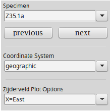
The information printed to the window is the pmag_result_name in the data table, the method codes (here the geochronology method, the type of demagnetization code and the types of demagnetization experiments), and each site mean declination inclination. The information following “mode 1” are the bootstrapped ellipse parameters.
Some data are study averages and some are individual sites.
Use magic_select.py to select only the individual site data. Try the
which produces plots like:

[Essentials Chapter 14][find_EI docs]
A data file was prepared using tk03.py to simulate directions at a latitude of 42∘. Use the program dipole_pinc.py to find what the expected inclination at this latitude is!
The data were “flattened” using the formula tanIo = f tanIf to simulate inclination error and saved in a data file find_EI_example.dat in the find_EI directory. Use the program find_EI.py to find the optimum flattening factor f which, when used to “unflatten” the data yields inclination and elongation (ratio of major and minor eigenvalues of orientation matrix, see the section on eigenvalues in the textbook) most consistent with the TK03.GAD paleosecular variation model of Tauxe and Kent (2004).
which produces these plots:

In this example, the original expected inclination at paleolatitude of 42 (61∘) is recovered within the 95% confidence bounds.
[Essentials Chapter 11] [fisher docs]
Draw a set of 10 directions from a Fisher distribution with a κ of 30 using fisher.py:
You could plot the output with, e.g., eqarea.py.
Note that every instance of this program draws a different distribution, so yours will look different in detail.
[Essentials Chapter 11] [fishqq docs]
Test whether a set of 100 data points generated with fisher.py are in fact Fisher distributed by using a Quantile-Quantile plot:
produces these plots:

which support a Fisher distribution for these data.
[Essentials Chapter 11] [fishrot docs]
Draw a set of 5 directions drawn from a Fisher distribution with a true mean declination of 33, a true mean inclination of 41, and a κ of 50:
[Essentials Chapter 12] [foldtest docs]
Use foldtest.py to perform the Tauxe and Watson (1994) foldtest on the data in foldtest_example.dat.
which gives the plots:
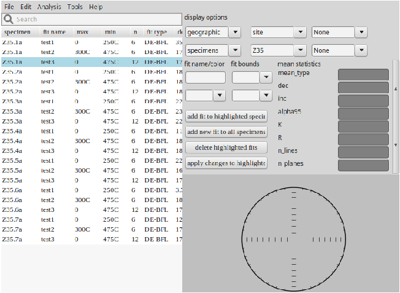
Apparently these directions were acquired prior to folding because the 95% confidence bounds on the degree of untilting required for maximizing concentration of the data (maximum in principle eigenvalue) τ1 of orientation matrix (see the section on eigenvalues in the textbook) includes 100%.
[Essentials Chapter 12] and [MagIC] [foldtest_magic docs]
This program performs the same test as foldtest.py. The only difference is that it reads MagIC formatted input files and allows the application of selection criteria as specified in the pmag_criteria.txt formatted file.
[Essentials Chapter 11] [gaussian docs]
Use gaussian.py to generate a set of 100 normally distributed data points drawn from a population with a mean of 10.0 and standard deviation of 30. Save it to a file named gauss.out.
You can check the sample mean and standard deviation with stats.py or make a histogram of the data with histplot.py
[Essentials Chapter 12] [gobing docs]
Use the dataset generated in the eqarea_ell.py example. Calculate Bingham parameters using gobing.py instead of within the plotting program:
which according to the help message from gobing.py is:
mean dec, mean inc, Eta, Deta, Ieta, Zeta, Zdec, Zinc, N
[Essentials Chapter 11] [gofish docs]
Draw a set of 10 directions drawn from a Fisher distribution with a true mean declination of 15, a true mean inclination of 41, and a κ of 50 and save it to a file, then use gofish.py to calculate the Fisher parameters:
which according to the help message from gofish.py -h is: mean dec, mean inc, N, R, k, a95, csd. Your results will vary because every instance of fishrot.py draws a different sample from the Fisher distribution.
[Essentials Chapter 12] [gokent docs]
Draw a set of 20 data points from a TK03.GAD distibution predicted for a latitude of 42∘N (see 14), without reversals. Calculate kent parameters using gokent.py
which according to the help message from gobing.py is: mean dec, mean inc, Eta, Deta, Ieta, Zeta, Zdec, Zinc, N
[Essentials Chapter 12] [goprinc docs]
Draw a set of 20 data points from a TK03.GAD distibution predicted for a latitude of 42∘N (see 14), including reversals. Calculate the eigenparameters of the orientation matrix (the principal components) using goprinc.py
which according to the help message from gobing.py is: τ1V 1D,V 1I,τ2V 2DV 2Iτ3V 3DV 3I,N.
grab_magic_key.py is a utility that will print out any column (-key option) from any [MagIC] formatted file. For example, we could print out all the site latitudes from the er_sites.txt file down loaded in the download_magic.py example:
You could save the data in a file with the output redirect function (> ) and plot them with, say plot_cdf.py.
which produces the fascinating (NOT!) plot:
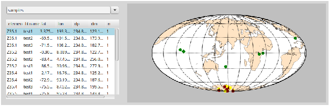
Make a histogram of the data generated with the gaussian.py program.
which makes a plot similar to:
[Essentials Chapters 5], [Essentials Chapter 7], [Essentials Appendix C.1] & [MagIC] [hysteresis_magic docs]
Plot the data in hysteresis_magic_example.txt, (from Ben-Yosef et al., 2008) which were imported into MagIC using AGM_magic.py. Use the program hysteresis_magic.py to plot the data.
which makes the plots:

[Essentials Chapter 2][Essentials Chapter 2] [igrf docs]
Use the program igrf.py to estimate the field on June 1, 1995 in Amsterdam, The Netherlands (52.5∘ N, 5∘E).
Now read from the file igrf_example.dat which requests field information for near San Diego for the past 3000 years. The program will evaluate the field vector for that location for dates from 1900 to the present using the IGRF/DGRF coefficients in the IGRF-11 model available from: http://www.ngdc.noaa.gov/IAGA/vmod/igrf.html. For the period from 1000 BCE to 1800, the program uses the CALS3k.4b of Korte and Constable (2011) available at: http://earthref.org/ERDA/1142/. Prior to that and back to 8000 BCE, the program uses the coefficients of Korte et al., 2011 for the CALS10k.1b, available at: http://earthref.org/ERDA/1403/
You can also make a plot of secular variation of field elements by specifying the age range and location on the command line. Try this for the location of San Diego for the age range: -3000 1925 in increments of 50 years:
and get this plot:

[ Essentials Chapter 11] [incfish docs]
Use the program incfish.py to calculate average inclination for inclination only data simulated by fishrot.py for an average inclination of 60∘. If you save the declination, inclination pairs, you can compare the incfish.py answer with the Fisher mean. The datafile incfish_example_di.dat has the declination, inclination pairs and incfish_example_inc.dat has just the inclinations.
The output for incfish.py is: [gaussian] mean inc, Fisher inc, N,R,k,α95. You can see that the incfish.py result is much closer to the Fisherian result than the gaussian mean is.
Someone (Saiko Sugisaki) measured a number of samples from IODP Expedition 318 Hole U1359A for IRM acquisition curves. She used the ASC impulse magnetizer’s coils # 2 and 3 and saved the data in the SIO format. Convert these to the MagIC measurements format, combine them in a single magic_measurements.txt file with combine_magic.py and plot the data with irmaq_magic.py.
which produces the plot:

[Essentials Chapter 13]; [MagIC] [k15_magic docs]
Someone took a set of samples from a dike margin in the Troodos Ophiolite and measured their anisotropy of magnetic susceptibility on an a Kappabridge KLY 2.0 instrument in the SIO laboratory:
The first line of each set of four has the specimen name, azimuth, plunge, and bedding strike and dip the next three lines are sets of five measurements in the 15 positions recommended by Jelinek (1977):

The 15 measurements for each specimen, along with orientation information and the specimen name were saved in the file k15_example.dat. Convert these to the MagIC format using the program k15_magic.py:
You can plot the output of this example (default file rmag_anisotropy.txt) using the program aniso_magic.py.
[Essentials Chapter 13]; [MagIC] [k15_s docs]
Use k15_s.py to calculate the best-fit tensor elements and residual error for the data in the file k15_example.dat (same file as for k15_magic.py. These are: the specimen name, azimuth and plunge and the strike and dip, followed by the 15 measurements made using the Jelinek 1977 scheme shown in the k15_magic.py example. Calculate the .s data in specimen, geographic and tilt adjusted coordinates:
[Essentials Chapter 13]; [MagIC] [KLY4S_magic docs]
The program AMSSpin available for downloading from http://earthref.org/ERDA/940/ generates data for the Kappabridge KLY4S spinning magnetic susceptibility instrument as described by Gee et al. (2008).
The files have the format:
where the columns are:
Specimen S_1 S_2 S_3 S_4 S_5 S_6 χb(μSI) date time user
Output files are in the format of the file KLY4S_magic_example.dat (found in the Measurement_Import/KLY4S_magic folder). One option is for orientation information to be output as an azdip formatted file (see azdip_magic.py.) Try it out on some data from IODP Expedition 318 (Hole U1359B) published by Tauxe et al., (2012). Note that the sample naming convention is # 5 (-ncn 5) and the sample name is the same as the site (-spc 0) using KLY4S_magic.py as follows:
This command will create the files needed by the MagIC database and the data can be plotted using aniso_magic.py. If you were to import the sample files from the LIMS data base for these samples, you could plot them versus depth, or as equal area projections using ani_depthplot.py and aniso_magic.py respectively.
[Essentials Chapter 11], [Essentials Appendix C2.2] & [MagIC] [lnp_magic docs]
This program will take pmag_specimen formatted MagIC files (for example, generated by zeq_magic.py) and plot data by site, combining best-fit lines and best-fit planes using the method described in Essentials Appendix C2.2. Try this out on the data from the San Francisco Volcanics, notorious for lightning strikes, published by Tauxe et al., 2003. These can be downloaded from the MagIC database from http://earthref.org/MAGIC/m000629dt20061213090720/ and unpacked with download_magic.py.
which generated this figure:

[Essentials Chapter 8] [lowrie docs]
Someone (Saiko Sugisaki) subjected a number of specimens from IODP Expedition 318 Hole U1359A specimens to a 3-D IRM experiment and saved the data in the SIO format. Use lowrie.py to make plots of blocking temperature for the three coercivity fractions.
which produces plots like this:
[Essentials Chapter 8] and [MagIC] [lowrie_magic docs]
This program works exactly like lowrie.py, but works on magic_measurements.txt formatted files. Use sio_magic.py to import the lowrie_example.dat data file into the MagIC format. Then use lowrie_magic.py to plot the data:
Data do not magically appear in the database. The paleomagnetic community must contribute them. One way to accomplish this is to use PmagPy to import measurement data into the MagIC format. You can use the MagIC.py GUI for this purpose. Find some example datafiles in the subdirectory ‘PmagPy_tutorial’ of the Datafiles_2.0 directory. Within this subdirectory, you will find a directory called ‘MyFiles’. This contains data from alternating field demagnetization (mc_af.mag), thellier-type experiments (mc_thel.mag), anisotropy of anhysteretic remanence (mc.aarm), hysteresis loops (mc205a1-1.agm and mc217a2-1.agm) as well as a file containing field orientation, location, etc. (orient.txt), age information (er_ages.txt) and citation information (er_citations.txt).
Follow the steps outlined in Quick Start to create a Project Directory and launch the MagIC.py GUI. Create a directory called MagIC in your Project Directory. Different operating systems will have a different look, but all versions will put up a Welcome window when you have fired up the program MagIC.py.
Now import the following:


After you have imported your various datafiles, you can process them using the tools in the Analysis and Plots menu. All of these options generate and execute command line calls for various PmagPy programs. The GUI uses default options because it “knows” the names of the files it has created, saving you from having to figure that out. Many of these options require you to type things in on the command line, such as ’a’ to s[a]ve plots, ’q’ to quit, or simply return to increment the specimen name. Follow the instructions for the specific program that are printed in the terminal window (see also the documentation in the section on PmagPy programs). Once the program has exited, control will be returned to the MagIC.py GUI.
The plots that are available to you now are: Demagnetization data, Thellier-type experimental data, and Hysteresis data. You may change the selection criteria from the defaults if you wish.
When you are finished looking at and perhaps re-interpreting the data, you are ready to prepare the data for the MagIC Console: the gateway to the MagIC database. This is a three step process under the Prepare for MagIC Console menu: : Assemble specimens, Assemble results and Prepare upload file.
After you have assembled the results some additional equal area projections and utilities will be available to you, if you wish to try these out.
To obtain the MagIC Console software, go to:
and select ‘MagIC Software v2.4’. Click on the ‘CONSOLE SOFTWARE’ and ’CONTROLLED VOCABULARIES’ links. Unzip the Console software and put the Controlled vocabularies file into it (copying over whatever was there). As of this writing the Console works on both Macs and PCs, but is extremely slow on the Mac OS operating system. Having been warned, open Excel and then select the ’MagIC.v24.console’ file. This will open the console. Under ’Operations’, select ’new smartbook’ and type the name ’Tutorial’ in the File name text box.
The ’wizard’ will guide you in choosing the necessary columns for the smartbook:

Click on the ’Use predefined settings...’ choose ‘Classical Directional and Intensity Study’ and click ’OK’. Then add ’Measurement data’ and ‘Rock Magnetics’ and click on the ’Next>>’ button. Check the boxes for ’Anisotropy’ and ’Hysteresis’ data and click on the ’Finish’ button. Your smartbook is now ready for populating.
Under the ’Operations’ menu, select ‘Import data files’ and choose the ’upload_dos.txt’ file in your MagIC project directory. This reads it in and parses it out to the right tables. Any error logs generated will be in the directory with the upload_dos file. When you have satisfied your curiosity about the contents of the smartbook, click on the ’Prepare for uploading’ option under the ’Operations’ menu. After you indicate that you really want to do this, the console goes through some extensive checking. If errors are encountered, you will be given the opportunity to correct them. When the console is finished, it exports an Excel file (in this case Tutorial.v24.xls) and a text file (in this case Tutorial.v24.txt). If this were a real study, you would upload these into the MagIC database by going to: http://earthref.org/MAGIC and selecting ’Upload a new contribution’. Do NOT upload this file to the database, as all uploaded datasets must be associated with publications. This was just a Tutorial.
This program takes any MagIC formatted file and selects lines that match the search criteria and saves the output as a new MagIC formatted file of the same type. Selection criteria match whole or partial strings, avoid whole or partial strings or evaluate minimum or maximum values. The syntax is to specify the input file with the -f option, the key you wish to search on with -key, followed by the string you wish to use as a criterion, followed with a ’T’ for match exactly, ’F’ avoid entirely, ’has’ for matching partially and ’not for avoiding any partial match, and min, max and eval for evaluating the numerical value. The -F option sets the output file.
For example, you could pick out all the records that match a certain site name string. You could select out records with specified method codes. You could get all records with inclinations that are positive.
Use magic_select.py to pick out all the best-fit lines based on AF demagnetization data from the pmag_specimens.txt file unpacked from the MagIC database in the download_magic.py example.
[MagIC] [make_magic_plots docs]
This program will inspect the files in the current directory and autogenerate some standard plots.
This program imports the binary format generated by the 2G proprietary software. It will place the orientation information in the er_samples.txt file and er_sites.txt file by default. Naming and orientation conventions can be specified as in the sections on Naming conventtions and Orientation conventions. You can also specify sampling method codes that pertain to ALL samples (see section on field information.)
[Essentials Chapter 5] & [MagIC] [AGM_magic docs]
This program imports Micromag hysteresis files into magic_measurements formatted files. Because this program imports data into the MagIC database, specimens need also to have sample/site/location information which can be provided on the command line. If this information is not available, for example if this is a synthetic specimen, specify -syn SYN_NAME for synthetic on the command line instead of the -spn SPEC_NAME switch.
Someone named Lima Tango has measured a synthetic specimen named myspec for hysteresis and saved the data in a file named agm_magic_example.agm. The backfield IRM curve for the same specimen was saved in agm_magic_example.irm. Use the program AGM_magic.py to import the data into a magic_measurements formatted output file. These were measured using cgs units, so be sure to set the units switch properly. Combine the two output files together using combine_magic.py. [This can be plotted using hysteresis_magic.py or quick_hyst.py.] hysteresis_magic.py will calculate various hysteresis parameters and put them in the relevant magic tables for you. ] s
Craig Jones’ PaleoMag software package (http://cires.colorado.edu/people/jones.craig/PMag3.html) imports various file formats, including the so-called ’CIT’ format developed for the Cal Tech lab.The documentation for the CIT sample format is here: http://cires.colorado.edu/people/jones.craig/PMag_Formats.html#SAM_format. Demagnetization data for each specimen is in its own file in a directory with all the data for a study. These files are rather strictly formatted with fields determined by the character number in the line. A typical datafile (hat tip Swanson-Hysell et al. (2009)) has this format:
There is an optional first line with ’CIT’ on it (not shown here).
There must be a file with the suffix ‘.sam’ in the same directory which gives details about the samples and a list of the datafiles in the directory. The .sam file has the form:
The first line is a comment, the second is the latitude and longitude followed by a declination correction.
For detailed description of the file format, check the PaleoMag home page.
Use the program CIT_magic.py to import the data files from the example data files in the CIT_magic directory of the Measurement_Import directory of the Datafiles_2.0 directory. The location name was “Mamainse Point”, the naming convention was #2 and they were collected by drilling and with a magnetic compass.
These data can now be viewed and interpreted using, for example zeq_magic.py.
This program was developed for the late Prof. Hagai Ron at the Hebrew Universisty, Jerusalem for files with formats like this:
HUJI_magic.py works in a similar fashion to sio_magic.py.
This program works in much the same fashion as sio_magic.py but the file formats are different. Here is a typical example:
The first line is the file name and the second has the latitude and longitude information. The columns are:
Use the program to import the file ldeo_magic_example.dat into the MagIC format. It was an AF demagnetization experiment.
Just for fun, download the whole core data from IODP expedition 318, Site U1359, Hole A. (Section Half set to ’A’) from the IODP LIMS database using WebTabular. These data were used in Tauxe et al. (2012) after some editing (removal core ends and disturbed intervals). Convert them into the MagIC format using ODP_csv_magic.py:
This takes a while so be patient....
If you also downloaded the core summary data from the LIMS database, you can plot the data and the core tops using core_depthplot.py
This format is the one used to import .PMD formatted magnetometer files (used for example in the PaleoMac software of Cogn, 2003) into the MagIC format. (See http://www.ipgp.fr/~cogne/pub/paleomac/PMhome.html for the PaleoMac home page. The version of these files that PMD_magic.py expects (UCSC version) contains demagnetization data for a single specimen and have a format like this:
The first line is a comment line. The second line has the specimen name, the core azimuth (a=) and plunge (b=) which are assumed to be the lab arrow azimuth and plunge (Orientation scheme #4)D. The third line is a header explaining the columns in the file.
Use PMD_magic.py to convert the file ss0101a.pmd in the directory ’PMD’ in the ’PMD_magic’ folder of the Measurement_import directory in the example datafiles directory. These were taken at a location named ’Summit Springs’ and have a naming convention of the type XXXX[YYY], where YYY is sample designation with Z characters from site XXX, or naming convention # 4-2. A single character distinguishes the specimen from the sample (-spc 1). All samples were oriented with a magnetic compass.
Because each file must be imported separately, you should use a different name for the output file for each input file (otherwise you will overwrite the default each time) and set the switch for sample file to append for subsequent imports:
After you finish importing all the data, combine the individual files together with combine_magic.py and look at them with, for example, zeq_magic.py.
(see also PMM_redo.py for importing interpretations made on these files using the UCSC (Jarboe) software).
The program sio_magic.py allows conversion of the SIO format magnetometer files to the MagIC common measurements format. It allows various experiment types so read the help message. The SIO format is a space delimited file:
The columns are:
Specimen treatment intensity declination inclination optional_string
The treatment field is the temperature (in centigrade), the AF field (in mT), the impulse field strength, etc. For special experiments like IRM acquisition, the coil number of the popular ASC impulse magnetizer can be specified if the treatment steps are in volts. The position for anisotropy experiments or whether the treatment is “in-field” or in zero field also require special formatting. The units of the intensity field are in cgs and the directions are relative to the ‘lab arrow’ on the specimen. Here are some examples of commonly used specimens and conversions from field arrow to lab arrow.

As an example, we use data from Sbarbori et al. (2009) done on a set of samples from the location “Socorro”, including AF, thermal, and thellier experimental data. These were saved in sio_af_example.dat, sio_thermal_example.dat, and sio_thellier_example.dat respectively. The lab field for the thellier experiment was 25 μT and was applied along the specimen’s Z axis (phi=0,theta=90).] Convert the example files into magic_measurement formatted files with names like af_measurements.txt, etc. Then combine them together with combine_magic.py:
The data in these files can be plotted and interpreted with dmag_magic.py, zeq_magic.py, or thellier_magic.py depending on the experiment.
Note that there are more examples of data file formats and import schemes in the sections on anisotropy of anhysteretic and thermal remanences.
[Essentials Chapter 13]; [MagIC] [SUFAR4-asc_magic docs]
The Agico Kappabridge instrument comes with the SUFAR program which makes the measurements and saves the data in a txt file like that in SUFAR4-asc_magic_example.txt in the SUFAR4-asc_magic directory. These data were measured on a KLY4S instrument with a spinning mode. Import them into the MagIC format:
[Essentials Chapter 10] and [MagIC] [TDT_magic docs]
This program imports the default data format for the ThellierTool Program of Leonhardt et al. (2004). After importing, the data can be viewed with thellier_magic.py.
The file format of the ThellierTool .tdt format is:
The first two lines are headers. The first column of the second line is the applied field in μT. The rest of this line is azimuth and plunge of the fiducial line and dip direction and dip of the bedding plane. The data columns are: specimen, treatment, intensity, declination and inclination. the intensity is the magnetization in 10-3 A/m. The treatment is of the form XXX.YY where XXX is the temperature and YY is 00, 11, 12, 13, 14 OR 0, 1, 2, 3, 4 where 0 is the NRM step, 11/1 is the pTRM acquisition step, 12/2 is the pTRM check step and 13/3 is the pTRM tail check. 14/4 is the additivity check.
Use the program TDT_magic.py to import the ThellierTool tdt formatted file TDT_magic_example.dat into the MagIC format. The field was 52.12 μT applied along the 0,0 direction.
[MagIC] [measurements_normalize docs]
This program takes specimen weights or volumes from an er_specimen.txt formatted file and normalizes the magnetic moment data to make magnetizations. Weights must be in kilograms and volumes in m3.
Use the program measurements_normalize.py to generate weight normalized magnetizations for the data in the file magic_measurements.txt in the —it measurements_normalize directory. Use the specimen weights in the file specimen_weights.txt.
The programs zeq_magic.py and thellier_magic.py make pmag_specimen formatted files which can be used for further data reduction either by plotting or contributing to site means, etc. Sometimes it is useful to redo the calculation, using anisotropy corrections or a change in coordinate systems, etc. The re-doing of these specimen level calculations is handled by, for example zeq_magic_redo.py or thellier_magic_redo.py. These programs use magic_measurements formatted files and perform calculations as dictated by a “redo” file which has the specimen name, bounds for calculation and, in the case of the demagnetization data interpretation, the type of calculation desired (best-fit lines with directional estimation magic method code:DE-BFL, best-fit planes with those with magic method code DE-BFP, etc.).
Make “redo” files from the existing pmag_specimen formatted file in the data files downloaded from the MagIC website as in download_magic.py and examine them as follows:
Note that the temperature steps are in kelvin and the AF demagnetization steps are in Tesla as required in the MagIC data base.
MagIC [nrm_specimens_magic docs]
After making NRM measurements, it is frequently useful to look at the directions in equal area projection to get a “quick look” at the results before proceeding to step wise demagnetization. The data in the magic_measurements files are usually in specimen coordinates - not geographic, so we need a way to rotate the data into geographic and or stratigraphic coordinates and save them in a pmag_specimens formatted file for plotting with eqarea_magic.py. The program nrm_specimens_magic.py will do this for you.
Get into the directory you made for tshe download_magic.py example.
Use nrm_specimens_magic.py to convert the NRM measurements in
magic_measurements.txt to geographic coordinates saved in a file named
nrm_specimens.txt. The orientation data are in the file er_samples.txt. Then plot
the specimen directions for the entire study using eqarea_magic.py:
The first command created a file nrm_specimens.txt and the second created an equal area projection of the NRM directions in geographic coordinates which should look like this:

[Essentials Chapter 9] and [Preparing for MagIC] [orientation_magic docs]
Try to import the file orientation_example.txt into the er_samples.txt and er_sites.txt files using orientation_magic.py. See Section 4.1.2 for details about the orient.txt file format. It has field information for a few sites. The samples were oriented with a Pomeroy orientation device (the default) and it is desirable to calculate the magnetic declination from the IGRF at the time of sampling (also the default). Sample names follow the rule that the sample is designated by a letter at the end of the site name (convention #1 - which is the default). So we do this by:
This program reads in the magic_measurements.txt file and creates an er_specimens.txt file. The specimen volumes and/or weights can then be put in columns labelled specimen_volume and specimen_weight respectively. Volumes must be in m3 and weights in kg. (Yes you can do the math...).
Try this out on the magic_measurements.txt file created in the irmaq_magic.py example. Pretend you have a bunch of specimen weights you want to use to normalize the NRM with the program measurements_normalize.py.
The program appears a bit flustered because you have no er_sites.txt file in this directory. If you DID, you would overwrite whatever site name was in that file onto the specimen table. This allows you to carry the changes in that table through to the specimen table (see orientation_magic.py.)
[Essentials Chapter 11] [pca docs]
This program calculates best-fit lines, planes or Fisher averages through selected treatment steps. The file format is a simple space delimited file with specimen name, treatment step, intensity, declination and inclination. Calculate the best-fit line through the first ten treatment steps in data file zeq_example.txt:
According to the help message, this is: specimen name, calculation type, N, beg, end, MAD, declination and inclination. The calculation type is the MagIC method code for best-fit lines (see Essentials Appendix ??.)
This program makes a simple XY plot from any arbitrary input file. You can specify which columns are X and Y, bounds on the columns, symbol color and size, axis labels and other options. See igrf.py for an example.
This program plots cumulative distribution functions of a single column of input data. Use as an example, a normally distributed set of 1000 data points generated by gaussian.py. Use the defaults of zero mean with a standard deviation of 1.
which should have generated a plot something like this:

This program will plot any column in a specified MagIC formatted file against any other column in the same file.
high resolution instructions [plot_mapPTS docs]
NOTE: This program only works if you have installed basemap (full version of Enthought Python as opposed to the free version.) It will not work with the free version of Enthought Python. plot_mapPTS.py will generate a simple map of the data points in a file (lon lat) on the desired projection. If you want to use high resolution or the etopo20 meshgrid (-etp option), you must install the high resolution continental outlines as described on the high resolution instructions website. There are many options, so check the documentation (-h option) for details.
Draw a set of 200 uniformly distributed points on the globe with the program uniform.py. Plot these on an orthographic projection with the viewing point at a longitude of 0 and a latitude of 30∘N. If you have installed the high resolution data sets, use the -etp option to plot the topographic mesh. Plot the points as large (size = 10) white dots. Also note that for some reason the .svg output does not place nicely with illustrator.
which should produce a plot similar to this:

[Essentials Chapter 11] [plotdi_a docs]
Place the following declination, inclination α95 data in a space delimited file
called
plotdi_a_example.dat.
| Dec | Inc | α95 |
| 39.1 | 37.5 | 5.0 |
| 30.3 | 36.2 | 15 |
| 29.9 | 45.6 | 7 |
| 34.6 | 28.4 | 3 |
Make a plot of these data using plotdi_a.py:
which makes the plot:
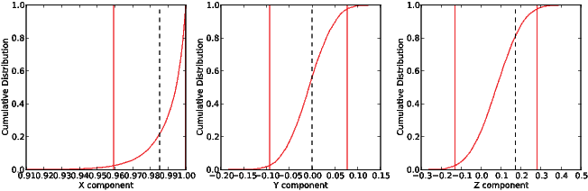
[:MagIC] [pmag_results_extract docs]
This program extracts a tab delimited txt file from a pmag_results formatted file. This allows you to publish data tables that have identical data to the data uploaded into the MagIC database. Try this out in the directory created for the download_magic.py example:
This creates tab delimited files that can be incorporated into a paper, for example. You can also export the information in LaTeX format if you prefer.
[Essentials Chapter 16] [pt_rot docs]
This program reads in a file with location, age and destination plate and rotates the data into the destination plate coordinates using the rotations and methods in Essentials Appendix A.3.5. Alternatively, you can supply your own rotation parameters with the -ff option.
First, save the location of Cincinnati (39.1 latitude, -84.7 longitude) in a file called pt_rot.input using either the UNIX cat function or your favorite text editor. Save the data as a lon/lat pair separated by a space. Then use the program pt_rot.py to rotate Cincinnati to (Northwest) African coordinates at 80 Ma. Plot both points using plot_mapPTS.py. You should save the lon, lat, plate, age, destination_plate information in a file called pt_rot_example.dat in the following:
The two plots will look like these:

Now, use the program to rotate a selection of North American poles from 180-200 Ma (in the file nam_180-200.txt in the pt_rot directory) to Pangea A coordinates (finite rotation pole and angle in nam_panA.frp. Note that plot_mapPTS.py reads in longitude/latitude pairs, while pt_rot.py reads in latitude longitude pairs.
These plots should look like this:

[Essentials Appendix B.1.5] [qqplot docs]
Makes a quantile-quantile plot of the input data file against a normal distribution. The plot has the mean, standard deviation and the D statistic as well as the Dc statistic expected from a normal distribution. Use qqplot.py to test whether the data generated with gaussian.py is in fact normally distributed. (It will be 95% of the time!).
which generates this plot:

[Essentials Chapter 5] and [MagIC] [quick_hyst docs]
hysteresis_magic.py makes plots of hysteresis loops and calculates the main hysteresis parameters. For a quick look with no interpretation, you can use quick_hyst.py. Try it out on the data file hysteresis_magic_example.dat in the hysteresis_magic directory.
which makes a plot like this:
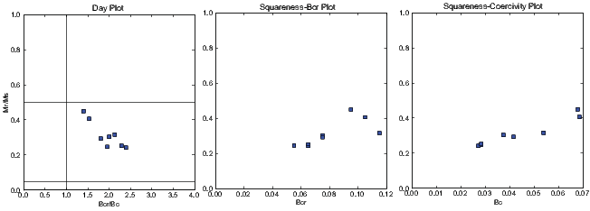
[Essentials Chapter 12] [revtest docs]
Use revtest.py to test whether the two modes in the data set revtest_example.txt are antipodal or not:
which produces these plots:
Because the 95% confidence bounds for each component overlap each other, the two directions are not significantly different.
[Essentials Chapter 12] and MagIC [revtest_magic docs]
Same as revtest.py but for pmag_sites MagIC formatted files. Try it out on the data file revtest_sites.txt. Then try using customize_criteria.py to change or create a pmag_criteria.txt file that fits your needs and redo the reversals test using only the selected sites.
This program tests whether two sets of observations (one with normal and one with reverse polarity) could have been drawn from distributions that are 180∘ apart using the McFadden and McElhinny (1990) implementation of the Watson (1983) V statistic test for a common mean. The implementation of the V statistic test in this program is the same as in WatsonsV.py. Use revtext_MM1990.py to perform a reversal test on data from the Ao et al., 2013 study of Early Pleistocene fluvio-lacustrine sediments of the Nihewan Basin of North China.
Lets plot the combined data set Ao_etal2013_combined.txt using eqarea.py:
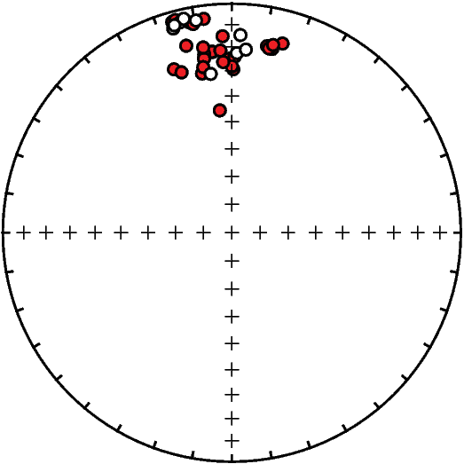
Conduct a reversal test between the normal directions Ao_etal2013_norm.txt and reversed directions Ao_etal2013_rev.txt:
As with WatsonsV.py, this program produces a plot that displays the cumulative distribution (CDF) of the Watson V values resulting from the Monte Carlo simulation. In the plot below, the red line is the CDF, the green solid line is the value of the V statistic calculated for the two populations and the dashed blue line is the critical value for the V statistic. In this example, the data are consistent with the two directional groups sharing a common mean as evidenced by V (green solid line) being a lower value than the critical value of V (dashed blue line).

[Essentials Chapter 13] [s_eigs docs]
Convert the .s format data in s_eigs_example.dat to eigenvalues and eigenvectors:
[Essentials Chapter 13] [s_geo docs]
Rotate the .s data into geographic coordinates using s_geo.py. The input format is the 6 tensor elements of s, followed by the azimuth and plunge of the X axis.
[Essentials Chapter 13] [s_hext docs]
Take the output from the s_geo.py example and calculate Hext statistics:
[Essentials Chapter 13] [s_tilt docs]
Rotate the .s data saved in s_tilt_example.dat into stratigraphic coordinates:
[MagIC] [MagIC] [s_magic docs]
Import .s format file output from the s_tilt.py example into an rmag_anisotropy formatted file. Files of the rmag_anisotropy format can be plotted with aniso_magic.py. To see how this works, use the program s_magic.py as follows:
This creates the output file rmag_anisotropy.txt by default, which can be plotted with the program aniso_magic.py.
[Essentials Chapter 14] [scalc docs]
Calculate the S scatter statistic for a set of VGPs saved in scalc_example.txt. Repeat using a Vandamme (Vandamme et al., 1994) variable cutoff. Then get the bootstrap bounds on the calculation.
Using no cutoff, the VGP scatter was 19.5∘. The Vandamme co-latitude cutoff was 32.3∘ which threw out 6 points and gave a scatter of 15.2∘.
[Essentials Chapter 14] [scalc_magic docs]
This is the same as scalc.py but works on pmag_results formatted files. Try it out on the pmag_results.txt file in the directory created for the download_magic.py example. Use a VGP co-latitude cutoff of 30∘.
There are frequently outlier directions when looking at data at the site level. Some paleomagnetists throw out the entire site, while some arbitrarily discard individual samples, assuming that the orientations were ‘bad’. Lawrence et al. (2009) suggested a different approach in which common causes of misorientation are specifically tested. For example, if the arrow indicating drill direction (see orientation conventions) was drawn the wrong way on the sample in the field, the direction would be off in a predictable way. Similarly (and more commonly) extraneous marks on the sample were used instead of the correct brass mark, the directions will fall along a small circle which passes through the correct direction. The program site_edit_magic.py plots data by site on an equal area projection, allows the user to select a particular specimen direction and plots the various pathological behaviors expected from common misorientations. If the stray directions can reasonably be assigned to a particular cause, then that sample orientation can be marked as ‘bad’ with a note as to the reason for exclusion and the directions from that sample can be excluded from the site mean, and the reason can be documented in the MagIC database.
Try this out using the data downloaded in the download_magic.py example.
Compare behaviors for sr11, sample sr11XXX and sr20, sample sr20i:

The latter plausibly fits the “wrong mark” hypothesis, while the former does not fit any of the common pathologies. The sample orientation in the er_samples.txt file has a note that it is ‘bad’ and will be ignored by the PmagPy programs when calculating site means.
MagIC [specimens_results_magic docs]
Starting from the magnetometer output files, paleomagnetists interpret the data in terms of vectors, using software like zeq_magic.py or thellier_magic.py. The interpretations from these programs are stored in pmag_specimen formatted files. Once a pmag_specimens format file has been created, the data are usually averaged by sample and/or by site and converted into V[A]DMs and/or VGPs and put in a pmag_results formatted file along with the location and age information that are available. Data must be selected or rejected according to some criteria at each level (for example, the specimen MAD direction must be less than some value or the site κ must be greater than some value). This onerous task can be accomplished using the program specimens_results_magic.py. This program has many optional features, so the reader is encouraged just to look at the documentation.
Test it out by using the datafiles created in the site_edit_magic.py example. Block the interpretation of some of the samples owing to ‘bad’ orientation. Change the selection criteria using customize_criteria.py. Then generate a new pmag_specimen.txt file using mk_redo.py, zeq_magic_redo.py and combine_magic.py. Then do the averaging by site with specimens_results_magic.py. The age bounds of the data are 0-5 Ma (-age 0 5 Ma). Use the existing (or modified) criteria (-exc option). There are some paleointensity data, so use the current site latitude for the VADM calculation (-lat option). Calculate the data in the geographic coordinate system (-crd g). Then extract the data into tab delimited tables using pmag_results_extract.py
Note that this procedure is more or less automated in the MagIC.py GUI.
[Essentials Chapter 11] [stats docs]
Calculates gaussian statistics for sets of data. Calculate the mean of the data generated in the gaussian.py example and saved in gauss.out:
which according to the help message is:
[Essentials Chapter 15] and [MagIC]
Follow the instructions for download_magic.py but search for Tauxe and Hartl and 1997. Download the smartbook (text file) and unpack it into a new directory using the download_magic.py command and the file zmab0094214tmp02.txt as the input file (in the Tauxe and Hartl directory). First run strip_magic.py to see what is available for plotting, then plot the inclination data versus depth (pos). Then plot the VGP latitudes versus age:
The last command made this plot:

[Essentials Chapter 9] [sundec docs]
Use the program sundec.py to calculate azimuth of the direction of drill. You are located at 35∘ N and 33∘ E. The local time is three hours ahead of Universal Time. The shadow angle for the drilling direction was 68∘ measured at 16:09 on May 23, 1994.
The program sundec.py works either by interactive data entry or by reading from a file.
Save the following in a file called sundec_example.dat:
which is:
ΔGMT lat lon year mon day hh mm shadow_angle
We can analyze this file with either:
or
or by manual input:
In any case, the declination is 154.2∘.
[Essentials Chapter 10] and [MagIC] [Thellier_GUI_tutorial.pdf]
The program thellier_gui.py combines functions from thellier_magic.py and new tools described by Shaar and Tauxe (2012) in a user-friendly graphical user interface (GUI). It can also be called from within MagIC.py, using files already prepared in the MagIC Project Directory and the interpretations from thellier_gui.py can be imported into the MagIC.py Project Directory after exiting the program. This section is a brief introduction on how to use thellier_gui.py as a stand alone application. For complete documentation, see:
http://earthref.org/PmagPy/pmagpydocs/Thellier_GUI_tutorial.pdf
A complete list of the definitions for paleointensity statistics used by Thellier_GUI.py is available here:
http://earthref.org/PmagPy/pmagpydocs/Thellier_GUI_Paleointensity_Statistics_Definitions.pdf
The GUI can be opened by typing in the Terminal window:
A “choose project directory” dialog window will appear as soon as the GUI is started.

The Project Directory should include a file named “magic_measurements.txt” . To make this use the GUI to Import your data files and combine your measurements. Also, if a file named ”rmag_anistropy.txt” exists, then the program reads the anisotropy data from rmag_anistropy.txt . Reading and processing the measurements files may take several seconds, depending on the number of the specimens.
When the MagIC project directory is selected, the program reads all the measurement data, checks them, processes them and sorts them. If Non-linear-TRM (NLT) data exist in magic_measurement.txt then the program tries to process the data using Equations (1)-(3) in ?. The program reads magic_measurement.txt, and processes the measurements for presentation as Arai and Zijderveld plots. We recommend that you check all the warnings and errors in Thellier_GUI.log before starting to interpret the data. For details about warnings and error messages during these steps, consult the tutorial document: Thellier_GUI_tutorial.pdf. Also, consult the Preferences to change certain plotting options.
This figure shows a snapshot of the main panel.

The top field in the panel includes the following buttons/controls (from left to right):
The center of the main panel has these elements:
The bottom of the main panel include paleointensity statistics. The first line has the threshold values (empty if N/A). The second line is the specimen’s statistics. For details see Appendix A1 in Shaar and Tauxe (2012).
If you have not already done so, download the example data files for PmagPy
from
http://earthref.org/PmagPy/Datafiles_2.0.zip
There are two folder located under the folder thellier_gu: SU1_example and
Tauxe_2006_example.
Case study 1: SU1_example:
Open a new Terminal window and fire up the program on the command line:
A choose directory dialog window will appear. Select the SU_1 project directory and click on the “choose” button.
Note that the temperature bounds are in Kelvin.
| er_sample_name | sample_int_n | sample_int_uT | sample_int_sigma_uT | sample_int_sigma_perc | |
| su100601 | 3 | 58.2 | 3.0 | 5.1 | |
[Essentials Chapter 10] and [MagIC] [thellier_magic docs]
To see how this works, download the text file from a recent paper by Shaar et al. (2011) from the MagIC database:
http://earthref.org/MAGIC/m006899dt20120629115216/
Unpack the data with download_magic.py. The original interpretations are stored in a file called pmag_specimens.txt, but thellier_magic.py looks for a specimen file called thellier_specimens.txt. To create such a file, use the program mk_redo.py followed by thellier_magic_redo.py. Then you can take a look at the data using thellier_magic.py and change some of the interpretations, for example adding one for the specimen s2s0-01 which was rejected by Shaar et al. (2011). This has both non-linear TRM acquisition and ATRM anisotropy data, so the corrections will have to be applied using thellier_magic_redo.py after exiting the thellier_magic.py program.
Here is a transcript of a session that does all this:
You should have gotten plots that look like these:

When you exit the program, you will have modified the thellier_specimens.txt file to include the new interpretation.
[Essentials Chapter 10] and [MagIC] [thellier_magic_redo docs]
This program allows the recalculation of paleointensity experimental data derived from Thellier type experiments. It allows correction for remanence anisotropy from AARM or ATRM ellipsoids (stored in rmag_anisotropy format files (see [Essentials Chapter 13] and the aarm_magic.py and atrm_magic.py) and non-linear TRM corrections, if TRM aquisition data are available (see also trmaq_magic.py).
Apply the corrections to the data you re-interpreted in the thellier_magic.py example, and create a new pmag_specimens.txt formatted file, use the program thellier_magic_redo.py. First, create a “redo” file using , then re-do the calculations using thellier_magic_redo.py, including anisotropy and non-linear TRM corrections. Combine all the specimen files into one using combine_magic.py.
[Essentials Chapter 16] [tk03 docs]
Sometimes it is useful to generate a distribution of synthetic geomagnetic field vectors that you might expect to find from paleosecular variation of the geomagnetic field. The program tk03.py generates distributions of field vectors from the PSV model of Tauxe and Kent (2004). Use this program to generate a set of vectors for a latitude of 30∘ and plot them with eqarea.py.
which should give you a plot something like this:

It is at times handy to be able to generate a uniformly distributed set of directions (or geographic locations). This is done using a technique described by Fisher et al. (1987).
Draw 50 directions from a uniform distribution and save to a file called uniform.out. Then plot the directions with eqarea.py:
which should yield a plot something (but not exactly) like this:
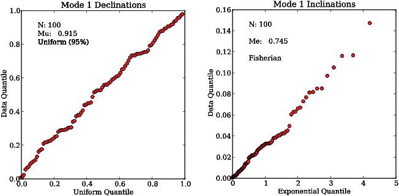
[MagIC] [update_measurements docs]
In the SIO laboratory, our default specimen naming scheme has a logical relationship to the sample and site names. Sometimes there is no simple relationship and the MagIC import procedure can’t parse the sample name into a site name, or the original concept of a site gets changed, for example if several lava flows turn out to be the same one. In any case, there must be a way to change the way data get averaged after the measurement data get converted to a magic_measurments formatted file. To do this, the sample, site relationship can be established in the er_sample.txt file for example via the procedure described in orientation_magic.py docuementation. After the correct relationships are in the er_samples.txt file, these must be propagated throughout the rest of the MagIC tables, starting with the magic_measurements.txt file. The program update_measurements.py will do this at the measurements level. specimens_results_magic.py will then propagate the changes through to the pmag_results.txt file.
This program takes all the MagIC formatted files and puts them into a file which can be imported into the MagIC console software for uploading into the MagIC database. As an example, we can “repackage” the file used file downloaded in the download_magic.py example. You could re-interpret that data or fix records with errors, then re-upload the corrected file.
In the upload_magic directory in the example datafiles directory, someone has entered all the site latitudes as longitudes and vice versa (surprisingly common!). You can fix this in the er_sites.txt file, by swapping the headers sample_lat/sample_lon in the er_samples.txt file and site_lat/site_lon in the er_sites.txt file then run specimens_results_magic.py to propogate the changes through to the results table. Be sure to set the criteria switch (-exc), the latitude switch (-lat), the geographic coordinate switch (-crd g) and the age switch (-age 0 5 Ma). Then re-package the files for uploading.
AFTER fixing the er_samples.txt and er_sites.txt files, do the following:
[Essentials Chapter 2] [vdm_b docs]
Use this program to try to recover the original field intensity b from a Virtual Dipole Moment of 71.59 ZAm2 for the latitude 22∘.
Compare this answer with the original in b_vdm.py, noting that the original input was in millitesla, while this is in tesla.
[Essentials Chapter 2] [vector_mean docs]
Create a set of vector data with tk03.py for a latitude of 30∘N. Calculate the vector mean of these data.
[Essentials Chapter 2] [vgp_di docs]
Use the program vgp_di.py to convert the following:
| λp | ϕp | λs | ϕs |
| 68 | 191 | 33 | 243 |
Put the data into a file vgp_di_example.dat for example using cat on a *NIX operating system. Here is a transcript of one way to use the program which spits out declination, inclination:
Just for good measure, you could try it out on the data in the di_vgp.py example. See if you get the right answer!
[Essentials Chapter 2], [MagIC] and high resolution instructions [vgpmap_magic docs]
Make a plot of the VGPs calculated for the dataset downloaded in the download_magic.py example. Use the high resolution topography (ETOPO 20) dataset and plot the data on an orthographic projection with the viewpoint at 60∘N and the Greenwich Meridian (longitude = 0). Make the points black dots with a size of 10pts. Save the file in png format
You should have a plot like this one:
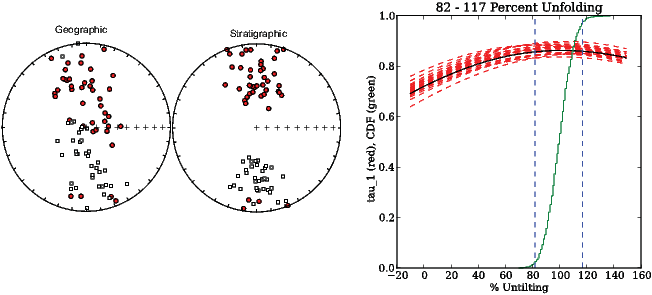
To use this program, you need to have basemap, which is not part of the free EPD software distribution. Also, if you don’t have the high resolution, just leave the -etp switch off to get a plain plot.
[Essentials Chapter 11] [watsonsF docs]
First generate two data files with fishrot.py with κ = 15, N = 10 and I = 42, with D = 10. for the first and 20 for the second:
To compare these two files using watsonsF.py:
The first number is Watson’s F statistic for these two files (see Essentials Chapter 11) and the second is the number to beat for the two files to be drawn from the same fisher distribution (share a common mean). In this case the data fail this test (F is greater than the required number). Your results may vary!
[Essentials Chapter 11] [watsonsV docs]
Use the two data files generated in the example for watsonsF.py and repeat the test using Watson’s V w statistic.
which generates the plot:

The two files are significantly different because Watson’s V (10.5 in this example) is greater than the V crit value estimated using Monte Carlo simulation (6.8).
Note that your results may vary in detail because every instance of fishrot.py generates a different randomly drawn dataset.
[Essentials Chapter 9] [zeq docs]
Use the program zeq.py to 1) plot a Zijderveld diagram of the data in
zeq_example.txt. b) Calculate a best-fit line from 15 to 90 mT. c) Rotate the data
such that the best-fit line is projected onto the horizontal axis (instead of the
default, North). d) Calcualte a best-fit plane from 5 to 80 mT. Save these
plots.
By selecting ‘b’, you can pick the bounds and choose ’l’ for best-fit line or ‘p’ for best-fit plane. You can rotate the X-Y axes by selecting ‘h’ and setting the X axis to 312. Finally, you can save your plots with the ’a’ option. You should have saved something like these plots:

The equal area projection has the X direction (usually North in geographic coordinates) to the top. The red line is the X axis of the Zijderveld diagram. Solid symbols are lower hemisphere. The solid (open) symbols in the Zijderveld diagram are X,Y (X,Z) pairs. The demagnetization diagram plots the fractional remanence remaining after each step. The green line is the fraction of the total remanence removed between each step.
[Essentials Chapter 9] & [MagIC] [zeq_magic docs]
Plot the AF demagnetization data available in the file you got in the download_magic.py example using zeq_magic.py. Use geographic coordinates, where orientations are available.
The plots will look similar to the zeq.py example, but the default here is for the X-axis to be rotated to the specimen’s NRM direction (note how the X direction is rotated off from the top of the equal area projection).
[Essentials Chapter 9] & [MagIC] [zeq_magic_redo docs]
In the zeq_magic directory, use the program zeq_magic_redo.py to create a pmag_specimens formatted file with data in geographic coordinates from the sample coordinate file zeq_specimens.txt. Assuming that sample orientations are in a file called er_samples.txt, use mk_redo.py first to create file called zeq_redo. Then use zeq_magic_redo.py to create two pmag_specimen formatted files: one in specimen coordinates zeq_specimens_s.txt and one in geographic coordinates zeq_specimens_g.txt. Combine these into one file called pmag_specimens.txt.
Note that indented lines belong with the line above as a single line.
Most of the software and this documentation were written by Lisa Tauxe (ltauxe@usd.edu) who is solely responsible for all bugs and boo-boos. Please contact me with bug reports, suggestions and requests.
You have just fired up Python and you are in an interactive mode with the prompt >>>. Now, you can just start typing commands. After each command, press the return key and see what happens:
To get out of Python interactive mode and back to your beloved
command line, type the control key (here-after  ) and D at the same
time. From your school experience of Algebra, you will recognize a,b,
and c in the above session as variables and + as an operation. If you
have previous programming experience, you may have been surprised
that we didn’t declare variables up front (C programmers always have
to). And, the variables above are obviously behaving as integers, not
floating point variables (no decimals) but they are not letters between i
and n. And there were funny lines that seemed to set three numbers at
once:
) and D at the same
time. From your school experience of Algebra, you will recognize a,b,
and c in the above session as variables and + as an operation. If you
have previous programming experience, you may have been surprised
that we didn’t declare variables up front (C programmers always have
to). And, the variables above are obviously behaving as integers, not
floating point variables (no decimals) but they are not letters between i
and n. And there were funny lines that seemed to set three numbers at
once:
Here are some rules governing variables and operations in Python:
O.K. First of all - how do you pronounce ‘NumPy’. According to Important People at Enthought (e.g, Robert Kern), it should be pronounced “Num” as in “Number” and “Pie” as in, well, pie, or Python. Oops. It is way more fun to say Numpee!
So, that out of the way, what can NumPy do for us? Turns out, a whole heck of a lot! But for now we will just scratch the surface. It can, for example, give us the value of π as numpy.pi. Note how the module name comes first, then the name of the function we wish to use. In this case, the function just returns the value of π.
To use NumPy functions, we must first “import” the module with the command import. The first time you do this after installing Python, it may take a while, but after that it should be very quick.
There are four styles of the import command which all do pretty much the same thing but differ in how you have to call the function after importing:
This makes all the functions in NumPy available to you, but you have to call them with the numpy.FUNC syntax.
This does the same as the first, but allows you to call NumPy anything you want - to save typing? To import all the functions from NumPy and not have to type numpy at all:
This imports all the umpty-ump functions, which is a heavy load on your memory, but you can also just import a few, like pi or sqrt:
Did you notice how sqrt(4) where 4 was an integer, returned a floating point variable (2.0)?
Good housekeeping Tip #1: I tend to import modules using the first option above. That way I know what module the functions I’m using are coming from - especially because we don’t know off-hand ALL the functions available in any given module and there might be conflicts with my own function names or two different modules could have the same function (like math and numpy).
Here is a (partial) list of some useful NumPy functions:
| absolute(x) | absolute value |
| arccos(x) | arccosine |
| arcsin(x) | arcsine |
| arctan(x) | arctangent |
| arctan2(y,x) | arctangent of y/x in correct quadrant (***very useful!) |
| cos(x) | cosine |
| cosh(x) | hyperbolic cosine |
| exp(x) | exponential |
| log(x) | natural logarithm |
| log10(x) | base 10 log |
| sin(x) | sine |
| sinh(x) | hyperbolic sine |
| sqrt(x) | square root |
| tan(x) | tangent |
| tanh(x) | hyperbolic tangent |
Note that in the trigonometric functions, the argument is in RADIANS!.You can convert from degrees to radians by multiplying by: numpy.pi/180.. Also notice how these functions have parentheses, as opposed to numpy.pi which has none. The difference is that these take arguments, while numpy.pi just returns the value of π.
If you are desperate, you can always use your Python interpreter as a calculator:
The time has come to talk about variable types. We’ve been very relaxed up to now, because we don’t have to declare them up front and we can often even change them from one type to another on the fly. But - variable types matter, so here goes. Python has integer, floating point (both long and short), string and complex variable types. It is pretty clever about figuring out what is required. Here are some examples:
Try doing math with these!
Lesson learned: you can’t add a number and a string. and string addition is different! But you really have to be careful with this. If you multiply a float by an integer, it is possible that you will convert the float to an integer when you really wanted all those numbers after the decimal! So, if you want a float, use a float.
You can convert from one type to another (if appropriate) with:
long() converts to a double precision floating point and complex() converts the two parts to a complex number.
There is another kind of variable called “boolean”. These are: true, false, and, or, and not. For the record, the integer ‘1’ is true and ‘0’ is false. These can be used to control the flow of the program as we shall learn later.
In previous programming experience, you may have encountered arrays, which are a nice way to group a sequence of numbers that belong together. In Python we also have arrays, but we also have more flexible data structures, like lists, tuples, and dictionaries, that group arbitrary variables together, like strings and integers and floats - whatever you want really. We’ll go through some attributes of the various data structures, starting with lists.
Examples:
To slice out a chunk of the middle of a list:
This takes items 2 and 3 out (note it takes out up to but not including the last item number - don’t ask me why). Or, we can slice it this way:
which takes from the fourth item (starting from 0!) to the end.
To copy a list BEWARE! You can make a copy - but it isn’t an independent copy (like in, e.g., Fortran), but it is just another name for the SAME OBJECT, so:
See how mycopy got changed when we changed mylist? To spawn a new list that is a copy, but an independent entity:
Now try:
So now mycopy stayed the way it was, even as mylist changed.
Python is “object oriented”, a popular concept in coding circles. We’ll learn more about what that means later, but for right now you can walk around feeling smug that you are learning an object oriented programming language. O.K., what is an object? Well, mylist is an object. Cool. What do objects have that might be handy? Objects have “methods” which allow you to do things to them. Methods have the form: object.method()
Here are two examples:
For a complete list of methods for lists, see: http://docs.python.org/tutorial/datastructures.html#more-on-lists
Numbers are numbers. While there are more kinds of numbers (complex, etc.), strings can be more interesting. Unlike in some languages, they can be denoted with single, double or triple quotes: e.g., ‘spam’, “Sam’s spam”, or
Strings can be added together (newstring = ’spam’ + ’alot’). They can be sliced (newerstring = newstring[0:3]). but they CANNOT be changed in place - you can’t do this: newstring[0]=’b’. To find more of the things you can and cannot do to strings, see:
http://docs.python.org/tutorial/introduction.html#strings
What? Tuples? Tuples consist of a number of values separated by commas. They are denoted with parentheses.
Tuples are sort of like lists, but like strings, their elements cannot be changed. However, you can slice, concatenate, etc. For more see:
http://docs.python.org/tutorial/datastructures.html#tuples-and-sequences
Dictionaries are denoted by {}. They are also somewhat like lists, but instead of integer indices, they use alphanumeric ‘keys’: I love dictionaries. So here is a bit more about them.
To define one:
To return the value associated with a specific key:
To change a key value:
To add a new key value:
Dictionaries also have some methods. One useful one is:
which returns a list of all the keys.
For a more complete accounting of dictionaries, see:
http://docs.python.org/tutorial/datastructures.html#dictionaries
Arrays in Python have many similarities to lists. Unlike lists, however, arrays have to be all of the same data type (dtype), usually numbers (integers or floats), although there appears to be something called a character array. Also, the size and shape of an array must be known a priori and not determined on the fly like lists. For example we can define a list with L=[], then append to it as desired, but not so arrays - they are much pickier and we’ll see how to set them up later.
Why use arrays when you can use lists? They are far more efficient than lists particularly for things like matrix math. But just to make things a little confusing, there are several different data objects that are loosely called arrays, e.g., arrays, character arrays and matrices. These are all subclasses of ndarray. I’m just going to briefly introduce arrays and matrices here.
Here are a few ways of making arrays:
Note the difference between linspace(start,stop,N) and arange(start,stop,step). The function linspace creates an array with 14 evenly spaced elements between the start and stop values while arange creates an array with elements at colorbluestep intervals between the starting and stopping values. In some of the online examples you will find the short-cuts for arange() and linspace as r_(-5,5,20j) and r_(-5,5,1.) respectively.
Python arrays have methods like dtype, ndim, shape, size, reshape(), ravel(), transpose() etc. Did you notice how some of these require parentheses and some don’t? The answer is that some of these are functions and some are classes, both of which we will get to later.
Let’s see what the methods can do. First, arrays made in the above example are of different data types. To find out what data type an array is, just use the method dtype as in:
And of course arrays, unlike lists have dimensions and shape. Dimensions tell us how many axes there are with axes defined as in this illustration:

As shown above our A array has two dimensions (axis 0 and 1). To get Python to tell us this, we use the ndim method:
Notice how zeros, ones and ndarray used a shape tuple in order to define the arrays in the examples above. The shape of an array is how many elements are along each axis. So, naturally we see that the C array is a 2x3 array. Python returns a tuple with the shape information using the shape method:
Let’s say we don’t want a 2x3 array for the sequence in the array C, but we want a 3x2 array. Python can reshape an array with a different shape tuple like this:
And sometimes we just want all the elements lined up along one axis. We could do that with reshape of course using a tuple with the size of the array (the total number of elements). You can see that this is 6 here. We could even get python to tell us what the size is (C.size) and use that in the reshape size tuple. Alternatively we can use the ravel() method which doesn’t require us to know the size in advance:
There are other ways to reshape, slice and dice arrays. The syntax for slicing of arrays is similar to that for lists:
Lots of applications in Earth Science require the transpose of an array:
Also, we can concatenate two arrays together with the - you guessed it - concatenate() method. For a lot more tricks with arrays, go to the NumPy Reference website here: http://docs.scipy.org/doc/numpy/reference/.
To convert the A array to a list: L=A.tolist(), from a list or tuple to an array: A=numpy.array(L), or from a list, a tuple or an array to a NumPy array: a=numpy.asarray(L)
Let’s go a bit deeper into slicing of arrays. First a review of lists. You will recall that in python, indexing starts with 0, so for the list L=[0,2,4,6,8], L[1] is 2. The index of the last item is -1, so L[-1]=8. To find out what the index for the number 4 is, for example, we have the index() method: L.index(4), which will return the number 2. We actually already used this method when we implemented command line arguments, but it wasn’t really explained. We know that to reassign a given index a new value we use the syntax L[1]=2.5. And to use a part of a list (a slice) we use, e.g., B=L[2:4], which defines B as a list with L’s elements 2 and 3 (4 and 6). And you also know that B=L[2:] takes all the elements from 2 to the end. From these examples, you can infer that the basic syntax for slicing is [start:stop:step]; if the step is omitted it is assumed to be 1.
Arrays (and matrices) work in a similar fashion to lists, but these are multidimensional objects, so things get hairy fast. The basic syntax is the same: [start:stop:step], or i:j:k. but with Python arrays, we step through all the j’s for each i at step k. This is best shown with examples:
Let’s pick about the statement B[1:3,:-1:2] to see if we can understand what it does. The first part alone returns lines 2 and 3:
Here j goes from [:-1], in other words, we all but the last element:
And finally, we have the step of 2, which takes every other element:
For more on array slicing (indexing), see:
http://docs.scipy.org/doc/numpy/reference/arrays.indexing.html
Are you tired of typing yet? Python scripts are programs that can be run and re-run from the command line. You can type in the same stuff you’ve been doing interactively into a script file (ending in .py). You can edit scripts with your favorite text editor (NOT Word!). And then you can run them like this:
On a Mac or Unix system, you can put in a header line identifying the script as python (#!/usr/bin/env python), make it executable (chmod a+x) and run it like this:
On PCs, you can just type the name of the script without the header or the chmod command. But, because PCs don’t come standard with a cat command, you have to create the file with Notepad, instead of with cat for all the examples using cat.
Here is an example that creates a script using the Unix cat command, makes it executable and then runs it:
In a Python script on Unix machines (including MacOS), the first line MUST be:
so that the file is interpreted as Python. Unlike Fortran or C, you CANNOT start with a comment line (try switching lines 1 and 2 and see what happens).
The second line is a comment line. Anything to the right of # is assumed to be a comment. Notice that print goes by default to your screen. Because the message is a string, you can use single or double quotes for the test message. You can get an apostrophe in your output by using double quotes and quote marks by using single quotes, i.e.,
produces:
In the second print statement, the \’ is necessary to prevent an error (try it). This is an example of a Python ‘escape code’. These are used to escape some special meaning, as in an end-quote for a string in this example. We use the backslash to say that we really really want a quote mark here. Other escape codes are listed here:
http://www.python-course.eu/variables.php
Here’s another example of a program - this one has an typo in line 4:
You had intended to type ’abeg’ but typed ’abge’ instead. When you run the program, you get an error message:
Error messages are a desirable feature of Python. You don’t want the program to run by assigning some arbitrary value to abge and giving you a wrong answer. Yet many languages will do exactly that.
Any reasonable programming language must provide a way to group blocks of code together, to be executed under certain conditions. In Fortran, for example, there are if statements and do loops which are bounded by the statements if, endif and do, endo respectively. Many of these programs encourage the use of indentation to make the code more readable, but do not require it. In Python, indentation is the way that code blocks are defined - there are no terminating statements. Also, the initiating statement terminates in a colon. The trick is that all code indented the same number of spaces (or tabs) to the right belong together. The code block terminates when the next line is less indented. A typical Python program looks like this:
Exceptions to the code indentation rules are:
Good housekeeping Tip #2: Always use only spaces or only tabs in your code indentation. I use only spaces because I use vi to write my code. Others use Xcode, the Python IDLE program, or TextWrangler to write their code and some of these things use tabs by default. Whatever you do BE CONSISTENT because tabs are not the same as spaces in Python even if you can’t tell the difference just by looking at it.
In the following, I’ll show you how Python uses code blocks to create “do” and “while” loops, and “if” statements.
Here is an example of a simple “for loop”:
This script creates the list mylist with the line mylist=[42,‘spam’,‘ocelot’]. The length of mylist is an integer value returned by len(mylist). The script uses this integer as the ‘stop’ value in the range() function, which returns a list of integers from 0 to the stop value MINUS ONE at intervals of one. [ The minus one convention is hard to get use to for Fortran programmers, but it is typical of Python syntax (and also of C) so just deal with it.] Anyway, range(start,stop,step) is just like numpy.arange(start,stop,step) but returns integers instead of floats. Also, like numpy.arange(), there is a short hand form when the minimum is zero and the interval is one, so we could (and will) just use the command range(stop).
Python makes i step through the list of numbers from 0 to 2, printing the ith element of mylist. Note how the print command is indented - this is the program block that is executed for each i. Note also that the line could have been on the previous line after the colon, because there is only one line in the program block. But never-mind, this way works too. When i finishes it’s business, the program block terminates. At that point, the program prints out the ’All done’ string. There is no “enddo” statement or equivalent in Python.
But, Python is far more fun than the old-school for i in syntax in the above code snippet. In Python we can just step through a list directly. Here is another script which does just that (why not?):
Note that of course we could have used any variable name instead of ‘item’, but it makes sense to use variable names that mean what they do. It is easier to understand what ‘item’ stands for than just the Fortran style of i.
Here is an example with a little more heft to it. It creates a table of trigonometry functions, spitting them out with a formatted print statement:
Let’s pick this one apart a bit. First, notice the use of the variable deg2rad to convert from degrees to radians. Also notice how deg2rad is defined: deg2rad = np.pi/180. using the NumPy function for π and the decimal point after 180. While in this case, it makes absolutely no difference (try it!), it is a good practice to use real numbers if you want your variable to stay real. In fact:
Good housekeeping Tip #3: Always use a decimal if you want your variable to be a floating point variable.
The expression ctheta = np.cos(theta*deg2rad) uses the numpy cosine function. Ideally theta should be a real variable while in fact it is an integer in this expression, but fortunately Python figures that out and converts it to a real. Note that we could have also converted theta to a float first with the command float(theta).
To make the output look nice, we do not use
which would space the numbers irregularly among the columns and put out really long numbers. Instead, we explicitly specify the output format. The output format is given in the quotes. The format for each number follows the %, 5.1f is for 5 spaces of floating point output, with 1 space to the right of the decimal point. The single blank space between %5.1f and %8.4f is included in the output, in fact any text there is reproduced exactly in the output, thus to put commas between the output numbers, write:
Tabs (\t) would be formatted like this:
We just learned that for loops with lists just step through item by item. In n-dimensional arrays, they steps through row by row (like in slicing). For example,
If you really want to step through element by element, you can use the ravel() method which flattens an N-dimensional array to a single dimension:
For more on looping (or iterating), see:
http://docs.scipy.org/doc/numpy/reference/arrays.nditer.html
The “for loop” is just one way of controlling flow in Python. There are also if and while code blocks. These execute code blocks the same way as for loops (colon terminated top statements, indented text, etc.). For both of these, the code block is executed if the top statement is TRUE. For the “if” block, the code is executed once but in a “while” block, the code keeps executing as long as the statement remains TRUE.
The key to flow control therefore is in the top statement of each code block; if it is TRUE, then execute, otherwise skip it. To decide if something is TRUE or not (in the boolean sense), we need to evaluate a statement using comparisons. Here’s a handy table with comparisons (relational operators) in different languages:
| F 77 | F90 | C | MATLAB | PYTHON | meaning |
| .eq. | == | == | == | == | equals |
| .ne. | /= | != | ~= | != | does not equal |
| .lt. | < | < | < | < | less than |
| .le. | <= | <= | <= | <= | less than or equal to |
| .gt. | > | > | > | > | greater than |
| .ge. | > = | > = | > = | > = | greater than or equal to |
| .and. | .and. | & | & | and | |
| .or. | .or. | —— | — | or | |
These operators can be combined to make complex tests. Here is a juicy complicated statement:
There are rules for the order of operations for these things like, multiplication gets done before addition. But these are easy to forget. You can look it up in the documentation if you are unsure or, better, just put in enough parenthesis to make it completely clear to anyone reading your code.
Good housekeeping Tip #4: Use parentheses liberally - make the order of operation completely unambiguous even if you could get away with fewer.
One nice aspect of Python compared to C is that if you make a mistake and type, for example,
you will get an error message during compilation. In C this is a valid statement with a completely different meaning than is intended!
The simplest ‘if’ block works just like we have described:
However, as in any other reasonable programming language, there are whistles and bells to the ‘if’ code blocks. In Python these are: elif and else. A code block gets executed if the top if statement is FALSE and the elif statement is TRUE. If both the top if and the elif statements are FALSE but the else statement is TRUE, then Python will execute the block following the else. Consider these examples:
As already mentioned, the ‘while’ block continues executing as long as the while top statement is TRUE. In other words, the if block is only executed once, while the while block keeps looping until the statement turns FALSE. Here are a few examples:
All of these program blocks can also be done in an interactive session also using indentation. The interactive shell responds with ’.....’ instead of ’>>>’ once you type a statement it recognizes as a top statement. To signal that you are done with the program block, simply hit return:
Python would be no better than a rather awkward graphing calculator (and we haven’t even gotten to the graphing part yet) if we couldn’t read data in and spit data out. You learned a rudimentary way of spitting stuff out already using the print statement, but there is a lot more to file I/O in Python. We would like to be able to read in a variety of file formats and output the data any way we want. In the following we will explore some of the more useful I/O options in Python.
If you are using Python interactively or want interactivity in a script, use the command: raw_input(). It acts as a prompt and reads in whatever is supplied prior to a return as a string.
In this example, the variable ans will be read in as a string variable, converted to a float and appended to the list, X. raw_input() is a simple but rather annoying way to enter things into a program. Another (less annoying) way is put the data in a file (e.g., myfile.txt) with cat, paste, Excel (saved as a text file), or whatever and read it into Python. The procedure is straight-forward: we must first open the file, then read it in and parse lines into the desired variables.
To open a file we use the command open(), one of Python’s built-in functions. For a complete list of these, see:
http://docs.python.org/library/functions.html
The open() function returns an object, complete with methods, like readlines() which, yes, reads all the lines. Suppose you have a file containing the coordinates of some seismic stations which you want to plot on a map or something. (In fact, it is in the Datafiles_2.0/LearningPython directory of the Datafiles_2.0 package you can download). The file is called station.list and its first five lines are:
Here is a script (ReadStations.py that will open a file station.list, read in the data and print it out line by line.
If you run this script, you will get this behavior:
The function open() has some bells and whistles to it and has the form open(name[, mode[, buffering]) where the stuff in square brackets is optional. The ‘name’ argument is the file name to open and ‘mode’ is the way in which it should be opened, most commonly for reading ’r’, writing ’w’ or appending ’a’. I use the form ’rU’ for unformatted reading because I often want to read in files that were saved in Dos, Mac OR Unix line endings and ’rU’ figures all that out for you. Just in case you are curious, Unix lines end in ’\n’, Mac files in ’\r’ and Dos (and windows) lines end in ’\r\n’. I never use the ’buffering’ argument and don’t know what it does.
If you are curious about the line endings, try typing out the ‘representation’ of the line repr(line) in the above script and you get all the stuff that is normally invisible like the apostrophes and the line terminations:
Notice how in our first version, printing the line also printed the line feed (\n) as an extra line. To clean this off of each line, we can use the string strip() function:
Putting this into the code results in this behavior:
Let’s say you want to read in the data table into lists called Lats, Lons, and StaIDs (the first three columns). You need to split each line into its columns and append the correct column into the appropriate list. Some languages automatically split on the spaces but Python reads in the entire line as a string and ignores the spaces or other possible delimiters (commas, semi-colons, tabs, etc.). To split the line, we use the string function split([sep]) where [sep] is an optional separator. If no separator is specified (e.g., line.split()), it will split on spaces. Anything could be a separator, but the most common ones are ’,’, ’;’, and ’\t’. The latter is how a tab appears if you were to, say, print out the representation of the line, which shows all the invisibles.
Here is a slightly modified version of ReadStations.py, ParseStations.py which parses out the lines and puts numbers (floats or integers) in the right lists:
Python can also read from standard input. To do this, we need a system specific module, called sys which among other things has a stdin method. So, instead of specifying a file name in the open command, we could substitute the following line:
The program can be invoked with:
We could also use command line switches by reading in arguments from the command line. In the following example, we use the switch ’-f’ with the following argument begin the file name:
This version can be invoked with:
In the special case where the data in a file are entirely numeric, you can read in the file with a special numpy function loadtxt(). This reads the data into a list whereby each element of the list is a list of numbers from each line.
Let’s say I have a Python module that will convert latitudes and longitudes to UTM coordinates. O.K. I really do have one that I downloaded from here:
I wrote a script (ConvertStations.py) to convert each of the stations in my list to their UTM equivalents (assuming these were in a WGS-84 ellipsoid). It would be nice if after having done this to the data, I could then write it out somehow, preferably to a file. Of course I could use the print command like this:
which spits out something like this:
I could save the output with a UNIX re-direct:
But we yearn for more. So, more elegantly, I can open an output file [for appending ‘a’ or (over)writing ’w’] write a formatted string using the write method on the output file object with format string:
The only significant changes are 1) the object outfile is opened for writing. Note that this will clobber anything in a pre-existing file by that name and 2) the output file gets written to in the statement with a write method on the output file object:
The write statement uses the syntax: ’format string’%(list of variables tuple). Format strings have these rules:
A session using the script (ConvertStations2.py and a peek at the resulting file could look like this:
The Unix head command types out the first 10 lines of a file but has no DOS equivalent.
So far you have learned how to use functions from program modules like NumPy. You can imagine that there are many bits of code that you might write that you will want to use again and again, say converting between degrees and radians and back, or finding the great circle distance between two points on Earth, or converting between UTM and latitude/longitude coordinates (as in UTM.py, my new favorite package). The basic structure of a program with a Python function is:
The first line must have ’def’ as the first three letters, must have a function name with parentheses and a terminal colon. If you want to pass some variables to the function, they go where in_arg sits, separated by commas. There are no output variables here.
There are four different ways to handle argument passing.
1) You could have a function that doesn’t need any arguments at all:
2) You could use a set list of what are called ‘formal’ variables that must be passed:
3) You could have a more flexible need for variables. You signal this by putting *args in the in_args list (along with any formal variables you want):
4) You can use a keyworded, variable-length list by putting **kwargs in for in_args:
Although you can certainly write functional code without a document string, make a habit of always including one. Trust me - you’ll be glad you did. This can later be used to remind you of what you thought you were doing years later. It can be used to print out a help message by the calling program and it also let’s others know what you intended. Notice the use of the triple quotes before and after the documentation string - that means that you can write as many lines as you want.
This part of the code must be indented, just like in a for loop, or other block of code.
You don’t need this unless you want to pass back information to the calling body (see, for example print_kwargs() above). Python separates the entrance and the exit. See how it can be done in the gimme_pi() example above.
It is considered good Python style to treat your main program block as a function too. (This helps with using the document string as a help function and building program documentation in general.) In any case, I recommend that you just start doing it that way too. In this case, we have to call the main program with the final (not indented) line main():
Notice how in the above examples, all the functions preceded the main function. This is because Python is an interpreter and not compiled - so it won’t know about anything declared below as it goes through the script line by line. On the other hand, we’ve been running lots of functions and they were not in the program we used to call them. The trick here is that you can put a bunch of functions in a separate file (in your path) and import it, just like we did with NumPy. Your functions can then be called from within your program in the same way as for NumPy.
So let’s say I put all the above functions in a file called myfuncs.py:
I could then just import the module myfuncs from within another program, or just interactively. I can use the functions, or just call for help:
Inside a function, variable names have their own meaning which in many cases will be different from inside the calling function. So, variables names declared inside a function stay in the function. This is true unless you declare them to be “global”. Here is an example in which the main program “knows” about the functions variable V:
In addition to being able to write your own functions, of course Python has LOTS of modules and a gazzillion functions. The enthought distribution that you are using Includes plotting, numerical recipes, trig functions, image manipulation, animation, and many more.
Before we go any further, we need to learn some basic concepts about classes. These are the basis of “object oriented programming” OOP (that again!). Class objects lie behind plotting, for example and a rudimentary understanding of what they are and how they work will come in handy when we start doing anything but the simplest plotting exercises.
A class object is created by a call to a “class definition” which which can be thought of as a blueprint for the class object. Here is an simple example of a class definition:
Saving this class in a file called Shapes.py we can use it in a Python session in a manner similar to function modules:
In spite of superficial similarities, classes are not the same as functions. Although the Shape module is imported just the same as any other, to use it, we first have to create a class “instance” (C=Shapes.Circle(r)). C is an object with “attributes” (variables) and “methods”. All methods (parts that start with “def”), have an argument list. The first argument has to be a reference to the class instance itself, or “self”, followed by any variables you want to pass into the method. So the __init__ method initializes the instance attributes of an object. In the above case, it defined the attribute r, which gets passed in when the class is first called. Asking for any attribute (note the lack of parentheses), retrieves the current value of that attribute. Attributes can be changed (as in C.r=2.0).
The other methods (area and circumference) are defined like any function except note the use of ’self’ as the first argument. This is required in all class method definitions. In our case, no other parameters are passed in because the only one used is r, so the argument list consists of only self. Calling these methods returns the current values of these methods.
You can make a subclass (child) of the parent class which has all the attributes and methods of the parent, but may have a few attributes and methods of its own. You do this by setting up another class definition within a class.
So, the bottom line about classes is that they are in the same category of things as variables, lists, dictionaries, etc. That is, they are ‘data structures’ - they hold data, and the methods to process that data. If you are curious about classes, there’s lots more to know about classes that we don’t have time to get into, but you can find useful tutorials online:
(e.g., http://www.sthurlow.com/python/lesson08/)
So far you have learned the basics of Python, and NumPy. But Python was sold as a way of visualizing data and we haven’t yet seen a single plot (except a stupid one in the beginning). There are many plotting options within the Python umbrella. The most mature and the one I am most familiar with is matplotlib, a popular graphics module of Python. Actually matplotlib is a collection of a bunch of other modules, toolkits, methods and classes. For a fairly complete and readable tour of matplotlib, check out these links:
http://matplotlib.sourceforge.net/Matplotlib.pdf
and here:
http://matplotlib.sourceforge.net/
Let’s start by reviewing the simple plot script (matplotlib1.py):
The first step should be obvious by now, it imports matplotlib. Figures are rendered on “backends” so they appear on screen. There are a lot of different back-ends with slightly different looks. Some work better on different operating systems. I use the very old school backend called “TkAgg” backend because it “works”. So step 2 sets the backend: matplotlib.use(“TkAgg”). The module matplotlib itself contains a lot of other modules. One of these, pylab is the “business end” that has a lot of plotting methods and classes. It must be loaded alongside matplotlib, so step 3 is: import pylab. After that the fun starts.
In the above example, we call the plot method with a list as an argument. As I mentioned, matplotlib uses the concept of “classes” to make plots and this has just happened behind the scenes. We could have named the plot instance with a the figure() method (e.g., fig=pylab.figure()) and then referred to it later with the command fig.plot([1,2,3]), but we don’t have to in this simple case - the class instance is implied and is the “current plot”. You can tell this, if you do the above example in interactive mode:
The bit about [<matplotlib.lines.Line2D object at 0x4bd6eb0>] is Python’s way of telling you that you just created an object and something about it. In any case, when you give plot() a single sequence of values (as above), it assumes they are y values and supplies the x values for you.
Attributes of the pylab class, such as the Y axis label can be changes with the ylabel method. As you can imagine, there are LOTS of methods, including, surprise, an xlabel method.
When we are done customizing the plot instance, we can view it with the show method. When that gets executed, we will get a plot something like this:

Once that happens, we won’t be able to change the plot any more and in fact, we won’t get our terminal back until the little plot window is closed. You can save your plot with the little disk icon in a variety of formats. Adobe Illustrator likes .svg, or .eps while Microsoft products like .png file formats.
If you find it annoying to always have to close figures with the little red button, or save them with the disk icon, you can tweak the program like this:
The method pylab.savefig(FILENAME.FMT). The .FMT can be one of several, e.g., .eps, .svg, .ps, .pdf, .png, .gif, .jpg, etc.). Some of these (the vector graphics ones like pdf, ps, eps and svg) can be opened in Adobe Illustrator for modification.
As mentioned earlier, if you give plot() a single sequence of values, it assumes they are y values and supplies the x values for you. Garbage in, garbage out. But plot() takes an arbitrary number of arguments of the form: (X1,Y 1, line_style_1, X2,Y 2, line_style_2, etc.), where ’line_style’ is a string that specifies the line style as illustrated in this script called matplotlib2.py
which produces the plot:

From the code, you can probably figure out that a line style of ’r–’ is a red dashed line, and ’g^’ are green triangles. There are many other attributes that can be controlled: linewidth, dash style, etc. and I invite you to check out the matplotlib documentation.
By now, you should understand enough about classes, keyword argument passing and other pythonalia to be able to figure things out on your own. But don’t panic, I’m going to lead you through a few more examples, which I hope will speed you on your plotting way.
As already mentioned, pylab has the concept of “current figure” which subsequent commands refer to. In the preceding examples, we only had one figure, so we didn’t have to name it, but for fancier figures with several plots, we can create named figure objects by invoking a figure instance:
Notice the syntax whereby figsize is a method with width and height (in inches) specified by a tuple and num is the figure number. Notice that these are keyword arguments, and that there are many more: consult the list of **kwargs in the online documentation located here:
http://matplotlib.sourceforge.net/api/pyplot_api.html#matplotlib.pyplot.figure
Once we have a figure instance (sometimes called a “container”), we can do all kinds of things, including adding subplots. To do this, we can use the syntax:
Here the argument 211 means 2 rows, one column and this is the first plot. To make plots side by side, you would use: fig.add_subplot(121) for 1 row, two columns, etc.
After each add_subplot command, that subplot becomes the current figure for plotting on. If you want more freedom, say, you want to make a subplot at an arbitrary place, use the add_axes([left, bottom,width, height]) 0 method, e.g., add_axes([0.1,0.1,0.7,0.3]). The values are 0-1 in relative figure coordinates.
To illustrate these new concepts, consider the example code, matplotlib3.py:
which produces:

By now, you should be able to figure out what everything in that script does by yourself!
We already met xlabel and ylabel. But text can be added in a other ways, e.g., using the title, text, legend and arrow methods. Let’s decorate one of our early examples to show how some of these things work:
which produces this plot:
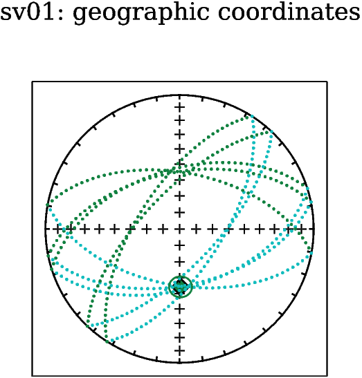
The title appears at the top of the plot. Text labels get places at the x and y coordinates on the plot and the legend will appear in the upper/lower right/left corner as specified in the string. The pylab.text(x,y,string, kwargs) method also has optional key word arguments, specifying font, size, color and the like. The legend ’labelist’ is a list of labels for each plot element. So, every line or point style that you want in your legend, append a label to the label list after the relevant plot command. Also note that the legend and xlabel methods use a special format for strings (r’LateX String’) which allows embedded LaTeX equation syntax to make scientific equations look right - so now you have to learn LaTeX!. Finally, the arrow gets drawn with the annotate method, which has a lot of other attributes as well. Check the matplotlib documentation for details.
There are lots of graphing styles possible with matplotlib, e.g., histograms, pie charts, contour plots, whisker plots, etc. I’m just going to show you a few examples. The best thing to do is to look through the online documentation for a plot that looks like what you need, then modify it. This is ALWAYS a good approach - start with something that works and fiddle with it until it suits your own particular needs.
Although there is much much more to do in Python, this documentation is aimed at getting and using PmagPy, so that’s it for this chapter. Congratulations if you made it to the end!